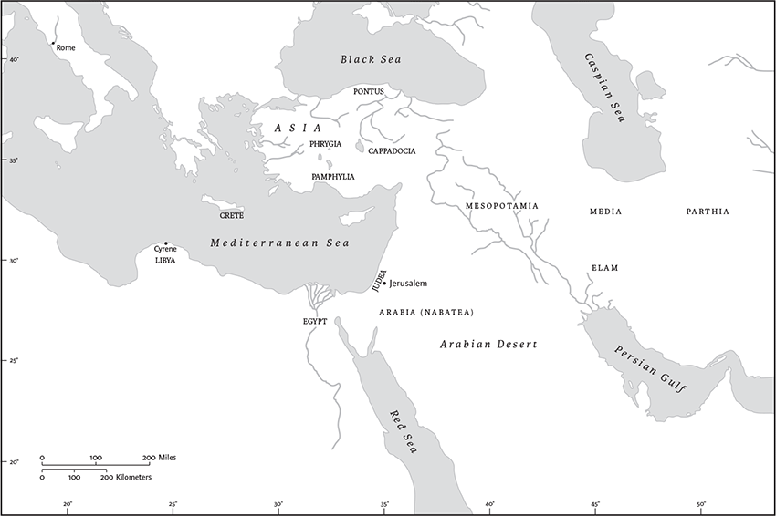
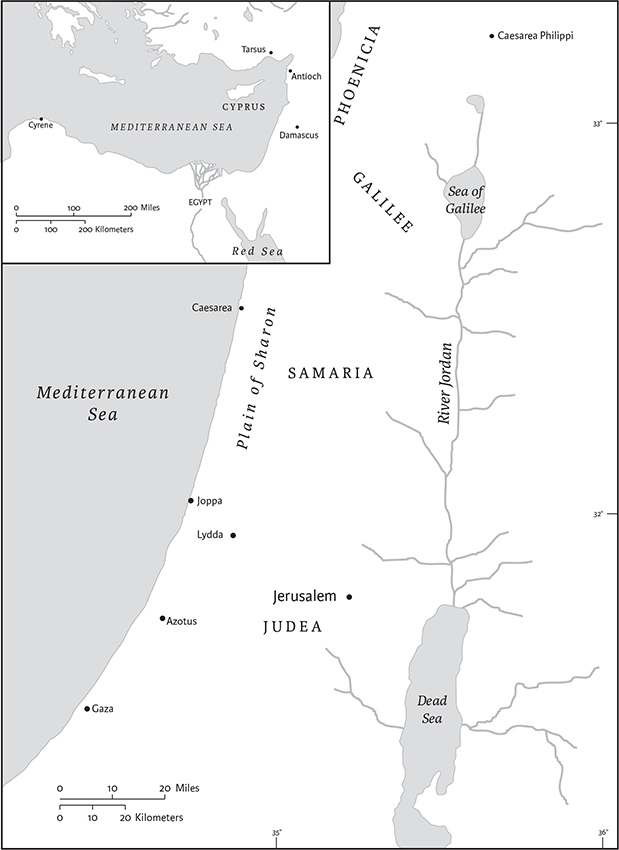

The Acts of the Apostles
Name
The anonymous author of the third Gospel and its sequel, the Acts of the Apostles, supplied no titles for these works. By the end of the second century ce this author was thought to be Luke, and his second volume was referred to as “Acts” in the sense of the “activities” or “deeds” of the apostles. As a descriptive title, however, Acts of the Apostles is a misnomer, since Peter is the only one of the twelve apostles whose deeds and speeches are recounted in detail. Paul, the subject of the second half of the book, refers to himself as an “apostle” in his letters but is not presented as such by Luke. Nevertheless, the title does capture an important concept of the book, namely, that the twelve apostles collectively assured the early church's continuity with Jesus. In Luke's view they did so because they had been witnesses to everything that happened during Jesus's ministry, as well as to his resurrection (Acts 1.21–22; 10.39–41).
Location in Canon
Acts is the fifth book of the New Testament, immediately following the four Gospels. Although modern interpreters now understand Luke-Acts as a unified literary work in two parts, in the canonical arrangement the Gospel of John interrupts that sequence so that the first four books of the New Testament form the fourfold Gospel. Moreover, Luke's two works never appear sequentially in any ancient manuscript, reflecting the same tendency to group the Gospels together. Consequently, in its canonical position, Acts connects the four Gospels to the collection of letters that follow, and its narrative focus, first on Peter and then on Paul, makes it an appropriate transition from the accounts about Jesus to the “apostolic” writings (Pauline letters and other authoritative writings, attributed to members of the twelve).
Authorship
Although Acts nowhere identifies its author, by the end of the second century it was argued, as Irenaeus (ca. 180 ce) does, that Luke was the obvious candidate, and that attribution remains conventional today. This identification was based on the reference to a “Luke” in Philemon 24 and in two other letters attributed to Paul (Col 4.14; 2 Tim 4.11), in conjunction with passages in Acts in which the author seems to present himself as a traveling companion of Paul. Irenaeus pointed to these passages (Acts 16.10–17; 20.5–15; 21.1–18; 27.1–28.16), in which the text shifts from third-person to first-person plural narration, as proof that Luke had been Paul's inseparable collaborator (Irenaeus, Adv. Haer. 3.14.1). Many modern scholars challenge the assumption that the “we” passages demonstrate personal familiarity with Paul. In fact, Luke's larger narrative construction results in a presentation of Paul that is inconsistent with biographical and theological details in Paul's own letters. For example, Luke's denying Paul the formal status of “apostle” is almost unimaginable for an actual companion of Paul. In his letters Paul repeatedly claims to be one divinely called to be an apostle (e.g., Rom 1.1; 1 Cor 1.1; Gal 1.1), and he recognizes the existence of other apostles besides the twelve (1 Cor 15.5–7). Luke's reluctance to use this term for Paul is connected to his view that only the twelve, who had been present with Jesus throughout his public activity (Acts 1.21–22), were apostles. This construction disqualifies Paul, even if Acts itself retains an echo of this contested status (14.4,14).
Although there is good reason to doubt that the evangelist Luke was a companion of Paul, it is clear that Luke greatly admired Paul and viewed his missionary career as decisive for establishing Christianity in Asia Minor and Greece. Indeed, Luke's portrayal suggests that Paul's fame and influence extended from Jerusalem to Rome. Luke was likely someone from the Pauline mission area who, several generations after Paul, addressed issues facing Christians who found themselves in circumstances quite different from those addressed by Paul himself. Precisely where Luke carried out this task is uncertain. Ancient tradition placed him in Antioch, but his obvious respect for Paul and the Pauline tradition might indicate that he was connected with one of the major cities of the Pauline mission around the Aegean Sea, such as Ephesus or Philippi.
Date
According to its opening words, Acts was written after Luke's Gospel, which scholarly consensus dates to 85–95 ce (though some arguments have been advanced for an early second-century date). The considerations on the relation between Luke and Paul just reviewed support a late first- or early second-century date. Discrepancies between the undisputed Pauline letters and the narrative about Paul in Acts (including Luke's restriction of the title “apostle” to the twelve) have long been recognized, and a temporal gap between letters written in the 50s ce and Acts written forty to fifty years later does much to clarify the situation. At the end of the first century Paul's image was undergoing revision (as is shown by the Pastoral Epistles; see 1 and 2 Tim; Titus, pp. 2123–42). For example, Luke does not hesitate to portray Paul as subject to Jewish law; this depiction is consistent with Luke's emphasis on the continuity between the history of Israel and of the church. Moreover, according to Luke it was not Paul's theological arguments but the conversion of Cornelius through Peter, ratified by the apostolic council (Acts 10.1–11.18), that established that Gentile Christians were not required to observe the law of Moses in its entirety. Such contradictions arise because Acts preserves an image of Paul from a period many decades after his death, and because Luke's rhetorical presentation addresses new issues for Christians of his day who lived in changed circumstances (e.g., the inclusion of the Gentiles was the major issue for Paul, while for Luke it is the retention of Jewish believers in community with them). Thus Paul's role in Acts is dictated not primarily by actual biographical details but rather by the needs of Luke's theology and the social circumstances of his readers.
Literary History
Luke gives no information about the sources upon which the narrative presented in Acts is based. He appears to have relied on a mixture of traditional information uncovered by his own investigation (see Lk 1.3) and his imagination about how the founding events unfolded in Jerusalem and reverberated throughout the Mediterranean world. Like most Greek historians, whom Luke imitates in part, Luke supplemented his narrative with speeches appropriate to significant occasions. These speeches, which amount to nearly one-third of the total text, are Luke's own literary creations, inserted into the narrative to instruct the reader by making explicit the theological implications of the narrative. They also serve to demonstrate Luke's view of the unity of the earliest Christian preaching (i.e., Peter and Paul preach the same message), even as they present Luke's own interpretation of the “events” (Lk 1.1) surrounding the emergence of the church. Scholars have attempted to identify traditional material and sources behind Luke's account in Acts, but no consensus has emerged from these efforts. To the extent that Luke did use preexisting sources and traditions, his rewriting of them leaves few clues about what they were. While scholars previously have made much of Luke's apparent lack of use of Paul's letters, some now believe that Luke in fact was familiar with at least a selection of them. It may be that Luke used Paul's letters in a way most appropriate to his narrative genre: not by quoting them but by more generally incorporating their information as an aid in fashioning his picture of Paul and the early church.
Structure and Contents
The book of Acts tells a dramatic story of the birth and expansion of the church from the time of the ascension of Jesus until the arrival of Paul in Rome. The plot line of Acts begins with Jesus's ascent to heaven. The narrative first portrays the life and dynamic growth of the early community in Jerusalem, energized by the Spirit and led by Peter and the other apostles up through the martyrdom of Stephen (chs 1–7). The persecution initiated with Stephen's death results in missionary activity outside Jerusalem highlighted by approaches to non-Jews by Philip (ch 8). After narrating the conversion of Saul (ch 9), Luke presents Peter as the individual through whom God establishes the inclusion of the Gentiles (10.1–11.18). Next, the early missionary tour of Barnabas and Saul/ Paul on behalf of Antioch is narrated (11.19–14.28), along with a story about Peter's miraculous escape from death (ch 12). The center of the book recounts the apostolic council's approval of the acceptance of Gentile believers and the limited application of Jewish ritual practices to them in the so-called apostolic decree (ch 15). Then Paul's further missionary travels are depicted in Philippi, Thessalonica, Athens, Corinth, Ephesus, Miletus, Caesarea, and Jerusalem (15.36–21.26). Finally, the book recounts Paul's arrest, imprisonment, and trials in Jerusalem and Caesarea, and his transfer to Rome (21.27–28.31), closing with the uplifting image of Paul, while under house arrest, preaching and teaching without hindrance in the capital city of the empire.
Interpretation
Written from the perspective of the late first or early second century ce, Acts is the only document from the earliest Christian period to offers a narrative sequel to the accounts of Jesus's words and deeds found in the Gospels. Its author had already produced his Gospel (Acts 1.1–2). His purpose in writing a second volume was more than a matter of antiquarian interest, although Acts can be compared with Hellenistic historical monographs. This account was intended to give Christians of his day an unshakable confidence in their future through an instructive survey of their past. In carrying out that overarching purpose, Acts addresses social and theological problems brought about by the church's relationship to its Jewish heritage and its Greco-Roman cultural and political environment. Luke sought to clarify both how the church was faithful to the God of the Jewish scriptures and how Christianity was not incompatible with the civic order and morality of the cities of the Roman Empire. Luke devotes half of the narrative to Paul, constructing for Christians of the era after Paul an image of this important figure consistent with the stance taken on Jewish and Roman concerns in the book. Beginning with Irenaeus and especially with Eusebius (d. ca. 339 ce), Christian readers drew on Acts more strictly as a historical account or for information useful for solving later theological problems, no longer observing how in Acts Luke specifically addressed the situation of his original audience with a rhetorical presentation. Moreover, such later uses were aided and abetted by the later canonical arrangement of Luke's works, which gives no indication that his two books were to be read as an interrelated pair. Thus, for most readers ancient and modern, Acts has been viewed not as a supplement to Luke's Gospel in particular, as its introduction suggests, but to the Gospels in general.
For Luke, who was likely a Gentile Christian (though a few scholars contend that he was a Diaspora Jew), God's promises made to the ancient people of God required the church to stand in continuity with Israel. But since most Jews did not accept Jesus as the Messiah, and since the increasingly Gentile Christian community ceased to observe Jewish ritual, this historical continuity had been called into question. Luke responds to this development by depicting the earliest Christians as faithful Jews in Jerusalem until persecution pushed them out. Then, by means of multiple elaborations of the Cornelius episode (10.1–48; 11.1–18; 15.7–9) and of the story of Paul's conversion (9.1–19; 22.4–16; 26.9–18), he demonstrates that the entrance of Gentiles into the church was nothing less than an act of God, and so by definition in continuity with Israel's history. It is highly significant, however, that Luke's ideal Gentile convert is one who continues to practice some elements of Jewish piety (10.2), and that Gentile Christians are urged to adhere to conduct that would permit association with Jews (15.20). Luke's portrayal of Paul's visits to synagogues and his Jewish lifestyle serve to reinforce this maintaining of continuity with Jewish roots. All of these rhetorical moves have implications for the composition of Luke's audience, which one might reasonably expect to have been a mixed Jewish-Gentile group, even if the former were in the minority.
Apart from any value Acts has as history, it is an important example of early Christian theology. Luke develops the idea of the church as a historical entity with its own distinctive era. Moreover, the earliest church, by being confined to Jerusalem, was set apart from the church of Luke's day. The ideal and unrepeatable structures of the early community resulted from the presence of the twelve apostles and eyewitnesses. Luke's concern to highlight the continuity between Israel and the church is expressed by the continued observance of Jewish practices in the early period, implicitly in contrast to Luke's later situation. The gap between Luke's generation and the earlier time is bridged by the endorsement of the Gentile mission in the deliberations of the apostolic council and the promulgation of the apostolic decree (15.20,29; 21.25). The latter pronouncement may have been of practical value for Luke's community by creating the conditions necessary to allow table fellowship between Jewish and Gentile Christians. Luke's portrayal of Christianity's close ties to Judaism and thus as possessing a venerable heritage (24.14) also bolsters his appeal to Roman officials not to concern themselves with internal religious disputes (25.19,20). Acts portrays influential Romans expressing interest in Christianity (13.12; 19.31), or at least concluding that it posed no threat to the state (18.15; 19.37; 23.29; 25.25; 26.32). In this way Luke demonstrates the nonsubversive nature of the church, possibly in an effort to convince elites of his own day that their membership in the Christian community was not incompatible with their status as Roman citizens. Luke's argument is designed for internal consumption; it was neither intended to persuade non-Christians nor would it have been likely to do so.
Narrative elements promoting continuity within the church itself are the descriptions of the church's proclamation and teaching about Jesus and the constant presence of the Spirit as the prime mover at crucial junctures in early Christian history (e.g., 8.29; 10.19; 16.6–7). Yet in Acts it is God who occupies the dominant place. Jesus is described as a man whom God legitimated by mighty works, wonders, and signs (2.22). Interpretation of Jesus's death as atoning occurs only once in an expression taken over from earlier tradition (20.28). The focal point of salvation is the resurrection, which is viewed as the turning point of history. The combination of all of these features allows Luke to portray the successful expansion of the early Christian mission throughout the Roman Empire under the direction of the Spirit according to the purpose of God.
Christopher R. Matthews
1
In the first book, Theophilus, I wrote about all that Jesus did and taught from the beginning 2until the day when he was taken up to heaven, after giving instructions through the Holy Spirit to the apostles whom he had chosen. 3After his suffering he presented himself alive to them by many convincing proofs, appearing to them during forty days and speaking about the kingdom of God. 4While stayinga with them, he ordered them not to leave Jerusalem, but to wait there for the promise of the Father. “This,” he said, “is what you have heard from me; 5for John baptized with water, but you will be baptized withb the Holy Spirit not many days from now.”
6So when they had come together, they asked him, “Lord, is this the time when you will restore the kingdom to Israel?” 7He replied, “It is not for you to know the times or periods that the Father has set by his own authority. 8But you will receive power when the Holy Spirit has come upon you; and you will be my witnesses in Jerusalem, in all Judea and Samaria, and to the ends of the earth.” 9When he had said this, as they were watching, he was lifted up, and a cloud took him out of their sight. 10While he was going and they were gazing up toward heaven, suddenly two men in white robes stood by them. 11They said, “Men of Galilee, why do you stand looking up toward heaven? This Jesus, who has been taken up from you into heaven, will come in the same way as you saw him go into heaven.”
12Then they returned to Jerusalem from the mount called Olivet, which is near Jerusalem, a sabbath day's journey away. 13When they had entered the city, they went to the room upstairs where they were staying, Peter, and John, and James, and Andrew, Philip and Thomas, Bartholomew and Matthew, James son of Alphaeus, and Simon the Zealot, and Judas son ofa James. 14All these were constantly devoting themselves to prayer, together with certain women, including Mary the mother of Jesus, as well as his brothers.
15In those days Peter stood up among the believersb (together the crowd numbered about one hundred twenty persons) and said, 16“Friends,c the scripture had to be fulfilled, which the Holy Spirit through David foretold concerning Judas, who became a guide for those who arrested Jesus—17for he was numbered among us and was allotted his share in this ministry.” 18(Now this man acquired a field with the reward of his wickedness; and falling headlong,d he burst open in the middle and all his bowels gushed out. 19This became known to all the residents of Jerusalem, so that the field was called in their language Hakeldama, that is, Field of Blood.) 20“For it is written in the book of Psalms,
‘Let his homestead become desolate,
and let there be no one to live in it’;
and
‘Let another take his position of overseer.’ 21So one of the men who have accompanied us during all the time that the Lord Jesus went in and out among us, 22beginning from the baptism of John until the day when he was taken up from us—one of these must become a witness with us to his resurrection.” 23So they proposed two, Joseph called Barsabbas, who was also known as Justus, and Matthias. 24Then they prayed and said, “Lord, you know everyone's heart. Show us which one of these two you have chosen 25to take the placee in this ministry and apostleship from which Judas turned aside to go to his own place.” 26And they cast lots for them, and the lot fell on Matthias; and he was added to the eleven apostles.
2
When the day of Pentecost had come, they were all together in one place. 2And suddenly from heaven there came a sound like the rush of a violent wind, and it filled the entire house where they were sitting. 3Divided tongues, as of fire, appeared among them, and a tongue rested on each of them. 4All of them were filled with the Holy Spirit and began to speak in other languages, as the Spirit gave them ability.

2.9–11: The native lands of Pentecost pilgrims.
5Now there were devout Jews from every nation under heaven living in Jerusalem. 6And at this sound the crowd gathered and was bewildered, because each one heard them speaking in the native language of each. 7Amazed and astonished, they asked, “Are not all these who are speaking Galileans? 8And how is it that we hear, each of us, in our own native language? 9Parthians, Medes, Elamites, and residents of Mesopotamia, Judea and Cappadocia, Pontus and Asia, 10Phrygia and Pamphylia, Egypt and the parts of Libya belonging to Cyrene, and visitors from Rome, both Jews and proselytes, 11Cretans and Arabs—in our own languages we hear them speaking about God's deeds of power.” 12All were amazed and perplexed, saying to one another, “What does this mean?” 13But others sneered and said, “They are filled with new wine.”
14But Peter, standing with the eleven, raised his voice and addressed them, “Men of Judea and all who live in Jerusalem, let this be known to you, and listen to what I say. 15Indeed, these are not drunk, as you suppose, for it is only nine o’clock in the morning. 16No, this is what was spoken through the prophet Joel:
17‘In the last days it will be, God declares,
that I will pour out my Spirit upon all flesh,
and your sons and your daughters shall prophesy,
and your young men shall see visions,
and your old men shall dream dreams.
18Even upon my slaves, both men and women,
in those days I will pour out my Spirit;
and they shall prophesy.
19And I will show portents in the heaven above
and signs on the earth below,
blood, and fire, and smoky mist.
20The sun shall be turned to darkness
and the moon to blood,
before the coming of the Lord's great and glorious day.
21Then everyone who calls on the name of the Lord shall be saved.’
22“You that are Israelites,a listen to what I have to say: Jesus of Nazareth,b a man attested to you by God with deeds of power, wonders, and signs that God did through him among you, as you yourselves know—23this man, handed over to you according to the definite plan and foreknowledge of God, you crucified and killed by the hands of those outside the law. 24But God raised him up, having freed him from death,c because it was impossible for him to be held in its power. 25For David says concerning him,
‘I saw the Lord always before me,
for he is at my right hand so that I will not be shaken;
26therefore my heart was glad, and my tongue rejoiced;
moreover my flesh will live in hope.
27For you will not abandon my soul to Hades,
or let your Holy One experience corruption.
28You have made known to me the ways of life;
you will make me full of gladness with your presence.’
29“Fellow Israelites,d I may say to you confidently of our ancestor David that he both died and was buried, and his tomb is with us to this day. 30Since he was a prophet, he knew that God had sworn with an oath to him that he would put one of his descendants on his throne. 31Foreseeing this, Davide spoke of the resurrection of the Messiah,f saying,
‘He was not abandoned to Hades,
nor did his flesh experience corruption.’
32This Jesus God raised up, and of that all of us are witnesses. 33Being therefore exalted atg the right hand of God, and having received from the Father the promise of the Holy Spirit, he has poured out this that you both see and hear. 34For David did not ascend into the heavens, but he himself says,
36Therefore let the entire house of Israel know with certainty that God has made him both Lord and Messiah,h this Jesus whom you crucified.”
37Now when they heard this, they were cut to the heart and said to Peter and to the other apostles, “Brothers,d what should we do?” 38Peter said to them, “Repent, and be baptized every one of you in the name of Jesus Christ so that your sins may be forgiven; and you will receive the gift of the Holy Spirit. 39For the promise is for you, for your children, and for all who are far away, everyone whom the Lord our God calls to him.” 40And he testified with many other arguments and exhorted them, saying, “Save yourselves from this corrupt generation.” 41So those who welcomed his message were baptized, and that day about three thousand persons were added. 42They devoted themselves to the apostles’ teaching and fellowship, to the breaking of bread and the prayers.
43Awe came upon everyone, because many wonders and signs were being done by the apostles. 44All who believed were together and had all things in common; 45they would sell their possessions and goods and distribute the proceedsa to all, as any had need. 46Day by day, as they spent much time together in the temple, they broke bread at homeb and ate their food with glad and generousc hearts, 47praising God and having the goodwill of all the people. And day by day the Lord added to their number those who were being saved.
3
One day Peter and John were going up to the temple at the hour of prayer, at three o’clock in the afternoon. 2And a man lame from birth was being carried in. People would lay him daily at the gate of the temple called the Beautiful Gate so that he could ask for alms from those entering the temple. 3When he saw Peter and John about to go into the temple, he asked them for alms. 4Peter looked intently at him, as did John, and said, “Look at us.” 5And he fixed his attention on them, expecting to receive something from them. 6But Peter said, “I have no silver or gold, but what I have I give you; in the name of Jesus Christ of Nazareth,d stand up and walk.” 7And he took him by the right hand and raised him up; and immediately his feet and ankles were made strong. 8Jumping up, he stood and began to walk, and he entered the temple with them, walking and leaping and praising God. 9All the people saw him walking and praising God, 10and they recognized him as the one who used to sit and ask for alms at the Beautiful Gate of the temple; and they were filled with wonder and amazement at what had happened to him.
11While he clung to Peter and John, all the people ran together to them in the portico called Solomon's Portico, utterly astonished. 12When Peter saw it, he addressed the people, “You Israelites,a why do you wonder at this, or why do you stare at us, as though by our own power or piety we had made him walk? 13The God of Abraham, the God of Isaac, and the God of Jacob, the God of our ancestors has glorified his servantb Jesus, whom you handed over and rejected in the presence of Pilate, though he had decided to release him. 14But you rejected the Holy and Righteous One and asked to have a murderer given to you, 15and you killed the Author of life, whom God raised from the dead. To this we are witnesses. 16And by faith in his name, his name itself has made this man strong, whom you see and know; and the faith that is through Jesusc has given him this perfect health in the presence of all of you.
17“And now, friends,d I know that you acted in ignorance, as did also your rulers. 18In this way God fulfilled what he had foretold through all the prophets, that his Messiahe would suffer. 19Repent therefore, and turn to God so that your sins may be wiped out, 20so that times of refreshing may come from the presence of the Lord, and that he may send the Messiahf appointed for you, that is, Jesus, 21who must remain in heaven until the time of universal restoration that God announced long ago through his holy prophets. 22Moses said, ‘The Lord your God will raise up for you from your own peopled a prophet like me. You must listen to whatever he tells you. 23And it will be that everyone who does not listen to that prophet will be utterly rooted out of the people.’ 24And all the prophets, as many as have spoken, from Samuel and those after him, also predicted these days. 25You are the descendants of the prophets and of the covenant that God gave to your ancestors, saying to Abraham, ‘And in your descendants all the families of the earth shall be blessed.’ 26When God raised up his servant,b he sent him first to you, to bless you by turning each of you from your wicked ways.”
4
While Peter and Johng were speaking to the people, the priests, the captain of the temple, and the Sadducees came to them, 2much annoyed because they were teaching the people and proclaiming that in Jesus there is the resurrection of the dead. 3So they arrested them and put them in custody until the next day, for it was already evening. 4But many of those who heard the word believed; and they numbered about five thousand.
5The next day their rulers, elders, and scribes assembled in Jerusalem, 6with Annas the high priest, Caiaphas, John,h and Alexander, and all who were of the high-priestly family. 7When they had made the prisonersi stand in their midst, they inquired, “By what power or by what name did you do this?” 8Then Peter, filled with the Holy Spirit, said to them, “Rulers of the people and elders, 9if we are questioned today because of a good deed done to someone who was sick and are asked how this man has been healed, 10let it be known to all of you, and to all the people of Israel, that this man is standing before you in good health by the name of Jesus Christ of Nazareth,a whom you crucified, whom God raised from the dead. 11This Jesusb is
‘the stone that was rejected by you, the builders;
it has become the cornerstone.’c
12There is salvation in no one else, for there is no other name under heaven given among mortals by which we must be saved.”
13Now when they saw the boldness of Peter and John and realized that they were uneducated and ordinary men, they were amazed and recognized them as companions of Jesus. 14When they saw the man who had been cured standing beside them, they had nothing to say in opposition. 15So they ordered them to leave the council while they discussed the matter with one another. 16They said, “What will we do with them? For it is obvious to all who live in Jerusalem that a notable sign has been done through them; we cannot deny it. 17But to keep it from spreading further among the people, let us warn them to speak no more to anyone in this name.” 18So they called them and ordered them not to speak or teach at all in the name of Jesus. 19But Peter and John answered them, “Whether it is right in God's sight to listen to you rather than to God, you must judge; 20for we cannot keep from speaking about what we have seen and heard.” 21After threatening them again, they let them go, finding no way to punish them because of the people, for all of them praised God for what had happened. 22For the man on whom this sign of healing had been performed was more than forty years old.
23After they were released, they went to their friendsd and reported what the chief priests and the elders had said to them. 24When they heard it, they raised their voices together to God and said, “Sovereign Lord, who made the heaven and the earth, the sea, and everything in them, 25it is you who said by the Holy Spirit through our ancestor David, your servant:e
27For in this city, in fact, both Herod and Pontius Pilate, with the Gentiles and the peoples of Israel, gathered together against your holy servante Jesus, whom you anointed, 28to do whatever your hand and your plan had predestined to take place. 29And now, Lord, look at their threats, and grant to your servantsg to speak your word with all boldness, 30while you stretch out your hand to heal, and signs and wonders are performed through the name of your holy servanth Jesus.” 31When they had prayed, the place in which they were gathered together was shaken; and they were all filled with the Holy Spirit and spoke the word of God with boldness.
32Now the whole group of those who believed were of one heart and soul, and no one claimed private ownership of any possessions, but everything they owned was held in common. 33With great power the apostles gave their testimony to the resurrection of the Lord Jesus, and great grace was upon them all. 34There was not a needy person among them, for as many as owned lands or houses sold them and brought the proceeds of what was sold. 35They laid it at the apostles’ feet, and it was distributed to each as any had need. 36There was a Levite, a native of Cyprus, Joseph, to whom the apostles gave the name Barnabas (which means “son of encouragement”). 37He sold a field that belonged to him, then brought the money, and laid it at the apostles’ feet.
5
But a man named Ananias, with the consent of his wife Sapphira, sold a piece of property; 2with his wife's knowledge, he kept back some of the proceeds, and brought only a part and laid it at the apostles’ feet. 3“Ananias,” Peter asked, “why has Satan filled your heart to lie to the Holy Spirit and to keep back part of the proceeds of the land? 4While it remained unsold, did it not remain your own? And after it was sold, were not the proceeds at your disposal? How is it that you have contrived this deed in your heart? You did not lie to usa but to God!” 5Now when Ananias heard these words, he fell down and died. And great fear seized all who heard of it. 6The young men came and wrapped up his body,b then carried him out and buried him.
7After an interval of about three hours his wife came in, not knowing what had happened. 8Peter said to her, “Tell me whether you and your husband sold the land for such and such a price.” And she said, “Yes, that was the price.” 9Then Peter said to her, “How is it that you have agreed together to put the Spirit of the Lord to the test? Look, the feet of those who have buried your husband are at the door, and they will carry you out.” 10Immediately she fell down at his feet and died. When the young men came in they found her dead, so they carried her out and buried her beside her husband. 11And great fear seized the whole church and all who heard of these things.
12Now many signs and wonders were done among the people through the apostles. And they were all together in Solomon's Portico. 13None of the rest dared to join them, but the people held them in high esteem. 14Yet more than ever believers were added to the Lord, great numbers of both men and women, 15so that they even carried out the sick into the streets, and laid them on cots and mats, in order that Peter's shadow might fall on some of them as he came by. 16A great number of people would also gather from the towns around Jerusalem, bringing the sick and those tormented by unclean spirits, and they were all cured.
17Then the high priest took action; he and all who were with him (that is, the sect of the Sadducees), being filled with jealousy, 18arrested the apostles and put them in the public prison. 19But during the night an angel of the Lord opened the prison doors, brought them out, and said, 20“Go, stand in the temple and tell the people the whole message about this life.” 21When they heard this, they entered the temple at daybreak and went on with their teaching.
When the high priest and those with him arrived, they called together the council and the whole body of the elders of Israel, and sent to the prison to have them brought. 22But when the temple police went there, they did not find them in the prison; so they returned and reported, 23“We found the prison securely locked and the guards standing at the doors, but when we opened them, we found no one inside.” 24Now when the captain of the temple and the chief priests heard these words, they were perplexed about them, wondering what might be going on. 25Then someone arrived and announced, “Look, the men whom you put in prison are standing in the temple and teaching the people!” 26Then the captain went with the temple police and brought them, but without violence, for they were afraid of being stoned by the people.
27When they had brought them, they had them stand before the council. The high priest questioned them, 28saying, “We gave you strict orders not to teach in this name,a yet here you have filled Jerusalem with your teaching and you are determined to bring this man's blood on us.” 29But Peter and the apostles answered, “We must obey God rather than any human authority.b 30The God of our ancestors raised up Jesus, whom you had killed by hanging him on a tree. 31God exalted him at his right hand as Leader and Savior that he might give repentance to Israel and forgiveness of sins. 32And we are witnesses to these things, and so is the Holy Spirit whom God has given to those who obey him.”
33When they heard this, they were enraged and wanted to kill them. 34But a Pharisee in the council named Gamaliel, a teacher of the law, respected by all the people, stood up and ordered the men to be put outside for a short time. 35Then he said to them, “Fellow Israelites,c consider carefully what you propose to do to these men. 36For some time ago Theudas rose up, claiming to be somebody, and a number of men, about four hundred, joined him; but he was killed, and all who followed him were dispersed and disappeared. 37After him Judas the Galilean rose up at the time of the census and got people to follow him; he also perished, and all who followed him were scattered. 38So in the present case, I tell you, keep away from these men and let them alone; because if this plan or this undertaking is of human origin, it will fail; 39but if it is of God, you will not be able to overthrow them—in that case you may even be found fighting against God!”
They were convinced by him, 40and when they had called in the apostles, they had them flogged. Then they ordered them not to speak in the name of Jesus, and let them go. 41As they left the council, they rejoiced that they were considered worthy to suffer dishonor for the sake of the name. 42And every day in the temple and at homea they did not cease to teach and proclaim Jesus as the Messiah.b
6
Now during those days, when the disciples were increasing in number, the Hellenists complained against the Hebrews because their widows were being neglected in the daily distribution of food. 2And the twelve called together the whole community of the disciples and said, “It is not right that we should neglect the word of God in order to wait on tables.c 3Therefore, friends,d select from among yourselves seven men of good standing, full of the Spirit and of wisdom, whom we may appoint to this task, 4while we, for our part, will devote ourselves to prayer and to serving the word.” 5What they said pleased the whole community, and they chose Stephen, a man full of faith and the Holy Spirit, together with Philip, Prochorus, Nicanor, Timon, Parmenas, and Nicolaus, a proselyte of Antioch. 6They had these men stand before the apostles, who prayed and laid their hands on them.
7The word of God continued to spread; the number of the disciples increased greatly in Jerusalem, and a great many of the priests became obedient to the faith.
8Stephen, full of grace and power, did great wonders and signs among the people. 9Then some of those who belonged to the synagogue of the Freedmen (as it was called), Cyrenians, Alexandrians, and others of those from Cilicia and Asia, stood up and argued with Stephen. 10But they could not withstand the wisdom and the Spirite with which he spoke. 11Then they secretly instigated some men to say, “We have heard him speak blasphemous words against Moses and God.” 12They stirred up the people as well as the elders and the scribes; then they suddenly confronted him, seized him, and brought him before the council. 13They set up false witnesses who said, “This man never stops saying things against this holy place and the law; 14for we have heard him say that this Jesus of Nazarethf will destroy this place and will change the customs that Moses handed on to us.” 15And all who sat in the council looked intently at him, and they saw that his face was like the face of an angel.
7
Then the high priest asked him, “Are these things so?” 2And Stephen replied: “Brothersg and fathers, listen to me. The God of glory appeared to our ancestor Abraham when he was in Mesopotamia, before he lived in Haran, 3and said to him, ‘Leave your country and your relatives and go to the land that I will show you.’ 4Then he left the country of the Chaldeans and settled in Haran. After his father died, God had him move from there to this country in which you are now living. 5He did not give him any of it as a heritage, not even a foot's length, but promised to give it to him as his possession and to his descendants after him, even though he had no child. 6And God spoke in these terms, that his descendants would be resident aliens in a country belonging to others, who would enslave them and mistreat them during four hundred years. 7‘But I will judge the nation that they serve,’ said God, ‘and after that they shall come out and worship me in this place.’ 8Then he gave him the covenant of circumcision. And so Abrahama became the father of Isaac and circumcised him on the eighth day; and Isaac became the father of Jacob, and Jacob of the twelve patriarchs.
9“The patriarchs, jealous of Joseph, sold him into Egypt; but God was with him, 10and rescued him from all his afflictions, and enabled him to win favor and to show wisdom when he stood before Pharaoh, king of Egypt, who appointed him ruler over Egypt and over all his household. 11Now there came a famine throughout Egypt and Canaan, and great suffering, and our ancestors could find no food. 12But when Jacob heard that there was grain in Egypt, he sent our ancestors there on their first visit. 13On the second visit Joseph made himself known to his brothers, and Joseph's family became known to Pharaoh. 14Then Joseph sent and invited his father Jacob and all his relatives to come to him, seventy-five in all; 15so Jacob went down to Egypt. He himself died there as well as our ancestors, 16and their bodiesb were brought back to Shechem and laid in the tomb that Abraham had bought for a sum of silver from the sons of Hamor in Shechem.
17“But as the time drew near for the fulfillment of the promise that God had made to Abraham, our people in Egypt increased and multiplied 18until another king who had not known Joseph ruled over Egypt. 19He dealt craftily with our race and forced our ancestors to abandon their infants so that they would die. 20At this time Moses was born, and he was beautiful before God. For three months he was brought up in his father's house; 21and when he was abandoned, Pharaoh's daughter adopted him and brought him up as her own son. 22So Moses was instructed in all the wisdom of the Egyptians and was powerful in his words and deeds.
23“When he was forty years old, it came into his heart to visit his relatives, the Israelites.c 24When he saw one of them being wronged, he defended the oppressed man and avenged him by striking down the Egyptian. 25He supposed that his kinsfolk would understand that God through him was rescuing them, but they did not understand. 26The next day he came to some of them as they were quarreling and tried to reconcile them, saying, ‘Men, you are brothers; why do you wrong each other?’ 27But the man who was wronging his neighbor pushed Mosesd aside, saying, ‘Who made you a ruler and a judge over us? 28Do you want to kill me as you killed the Egyptian yesterday?’ 29When he heard this, Moses fled and became a resident alien in the land of Midian. There he became the father of two sons.
30“Now when forty years had passed, an angel appeared to him in the wilderness of Mount Sinai, in the flame of a burning bush. 31When Moses saw it, he was amazed at the sight; and as he approached to look, there came the voice of the Lord: 32‘I am the God of your ancestors, the God of Abraham, Isaac, and Jacob.’ Moses began to tremble and did not dare to look. 33Then the Lord said to him, ‘Take off the sandals from your feet, for the place where you are standing is holy ground. 34I have surely seen the mistreatment of my people who are in Egypt and have heard their groaning, and I have come down to rescue them. Come now, I will send you to Egypt.’
35“It was this Moses whom they rejected when they said, ‘Who made you a ruler and a judge?’ and whom God now sent as both ruler and liberator through the angel who appeared to him in the bush. 36He led them out, having performed wonders and signs in Egypt, at the Red Sea, and in the wilderness for forty years. 37This is the Moses who said to the Israelites, ‘God will raise up a prophet for you from your own peoplea as he raised me up.’ 38He is the one who was in the congregation in the wilderness with the angel who spoke to him at Mount Sinai, and with our ancestors; and he received living oracles to give to us. 39Our ancestors were unwilling to obey him; instead, they pushed him aside, and in their hearts they turned back to Egypt, 40saying to Aaron, ‘Make gods for us who will lead the way for us; as for this Moses who led us out from the land of Egypt, we do not know what has happened to him.’ 41At that time they made a calf, offered a sacrifice to the idol, and reveled in the works of their hands. 42But God turned away from them and handed them over to worship the host of heaven, as it is written in the book of the prophets:
‘Did you offer to me slain victims and sacrifices
forty years in the wilderness, O house of Israel?
43No; you took along the tent of Moloch,
and the star of your god Rephan,
the images that you made to worship;
so I will remove you beyond Babylon.’
44“Our ancestors had the tent of testimony in the wilderness, as Godb directed when he spoke to Moses, ordering him to make it according to the pattern he had seen. 45Our ancestors in turn brought it in with Joshua when they dispossessed the nations that God drove out before our ancestors. And it was there until the time of David, 46who found favor with God and asked that he might find a dwelling place for the house of Jacob.c 47But it was Solomon who built a house for him. 48Yet the Most High does not dwell in houses made with human hands;d as the prophet says,
51“You stiff-necked people, uncircumcised in heart and ears, you are forever opposing the Holy Spirit, just as your ancestors used to do. 52Which of the prophets did your ancestors not persecute? They killed those who foretold the coming of the Righteous One, and now you have become his betrayers and murderers. 53You are the ones that received the law as ordained by angels, and yet you have not kept it.”
54When they heard these things, they became enraged and ground their teeth at Stephen.a 55But filled with the Holy Spirit, he gazed into heaven and saw the glory of God and Jesus standing at the right hand of God. 56“Look,” he said, “I see the heavens opened and the Son of Man standing at the right hand of God!” 57But they covered their ears, and with a loud shout all rushed together against him. 58Then they dragged him out of the city and began to stone him; and the witnesses laid their coats at the feet of a young man named Saul. 59While they were stoning Stephen, he prayed, “Lord Jesus, receive my spirit.” 60Then he knelt down and cried out in a loud voice, “Lord, do not hold this sin against them.” When he had said this,
8
he died.b 1And Saul approved of their killing him.
That day a severe persecution began against the church in Jerusalem, and all except the apostles were scattered throughout the countryside of Judea and Samaria. 2Devout men buried Stephen and made loud lamentation over him. 3But Saul was ravaging the church by entering house after house; dragging off both men and women, he committed them to prison.
4Now those who were scattered went from place to place, proclaiming the word. 5Philip went down to the cityc of Samaria and proclaimed the Messiahd to them. 6The crowds with one accord listened eagerly to what was said by Philip, hearing and seeing the signs that he did, 7for unclean spirits, crying with loud shrieks, came out of many who were possessed; and many others who were paralyzed or lame were cured. 8So there was great joy in that city.
9Now a certain man named Simon had previously practiced magic in the city and amazed the people of Samaria, saying that he was someone great. 10All of them, from the least to the greatest, listened to him eagerly, saying, “This man is the power of God that is called Great.” 11And they listened eagerly to him because for a long time he had amazed them with his magic. 12But when they believed Philip, who was proclaiming the good news about the kingdom of God and the name of Jesus Christ, they were baptized, both men and women. 13Even Simon himself believed. After being baptized, he stayed constantly with Philip and was amazed when he saw the signs and great miracles that took place.
14Now when the apostles at Jerusalem heard that Samaria had accepted the word of God, they sent Peter and John to them. 15The two went down and prayed for them that they might receive the Holy Spirit 16(for as yet the Spirit had not comea upon any of them; they had only been baptized in the name of the Lord Jesus). 17Then Peter and Johnb laid their hands on them, and they received the Holy Spirit. 18Now when Simon saw that the Spirit was given through the laying on of the apostles’ hands, he offered them money, 19saying, “Give me also this power so that anyone on whom I lay my hands may receive the Holy Spirit.” 20But Peter said to him, “May your silver perish with you, because you thought you could obtain God's gift with money! 21You have no part or share in this, for your heart is not right before God. 22Repent therefore of this wickedness of yours, and pray to the Lord that, if possible, the intent of your heart may be forgiven you. 23For I see that you are in the gall of bitterness and the chains of wickedness.” 24Simon answered, “Pray for me to the Lord, that nothing of what youc have said may happen to me.”

Chs 8–11: Sites of early Christian missionary activities
25Now after Peter and Johnd had testified and spoken the word of the Lord, they returned to Jerusalem, proclaiming the good news to many villages of the Samaritans.
26Then an angel of the Lord said to Philip, “Get up and go toward the southe to the road that goes down from Jerusalem to Gaza.” (This is a wilderness road.) 27So he got up and went. Now there was an Ethiopian eunuch, a court official of the Candace, queen of the Ethiopians, in charge of her entire treasury. He had come to Jerusalem to worship 28and was returning home; seated in his chariot, he was reading the prophet Isaiah. 29Then the Spirit said to Philip, “Go over to this chariot and join it.” 30So Philip ran up to it and heard him reading the prophet Isaiah. He asked, “Do you understand what you are reading?” 31He replied, “How can I, unless someone guides me?” And he invited Philip to get in and sit beside him. 32Now the passage of the scripture that he was reading was this:
“Like a sheep he was led to the slaughter,
and like a lamb silent before its shearer,
so he does not open his mouth.
33In his humiliation justice was denied him.
Who can describe his generation?
For his life is taken away from the earth.”
34The eunuch asked Philip, “About whom, may I ask you, does the prophet say this, about himself or about someone else?” 35Then Philip began to speak, and starting with this scripture, he proclaimed to him the good news about Jesus. 36As they were going along the road, they came to some water; and the eunuch said, “Look, here is water! What is to prevent me from being baptized?”f 38He commanded the chariot to stop, and both of them, Philip and the eunuch, went down into the water, and Philipg baptized him. 39When they came up out of the water, the Spirit of the Lord snatched Philip away; the eunuch saw him no more, and went on his way rejoicing. 40But Philip found himself at Azotus, and as he was passing through the region, he proclaimed the good news to all the towns until he came to Caesarea.
9
Meanwhile Saul, still breathing threats and murder against the disciples of the Lord, went to the high priest 2and asked him for letters to the synagogues at Damascus, so that if he found any who belonged to the Way, men or women, he might bring them bound to Jerusalem. 3Now as he was going along and approaching Damascus, suddenly a light from heaven flashed around him. 4He fell to the ground and heard a voice saying to him, “Saul, Saul, why do you persecute me?” 5He asked, “Who are you, Lord?” The reply came, “I am Jesus, whom you are persecuting. 6But get up and enter the city, and you will be told what you are to do.” 7The men who were traveling with him stood speechless because they heard the voice but saw no one. 8Saul got up from the ground, and though his eyes were open, he could see nothing; so they led him by the hand and brought him into Damascus. 9For three days he was without sight, and neither ate nor drank.
10Now there was a disciple in Damascus named Ananias. The Lord said to him in a vision, “Ananias.” He answered, “Here I am, Lord.” 11The Lord said to him, “Get up and go to the street called Straight, and at the house of Judas look for a man of Tarsus named Saul. At this moment he is praying, 12and he has seen in a visiona a man named Ananias come in and lay his hands on him so that he might regain his sight.” 13But Ananias answered, “Lord, I have heard from many about this man, how much evil he has done to your saints in Jerusalem; 14and here he has authority from the chief priests to bind all who invoke your name.” 15But the Lord said to him, “Go, for he is an instrument whom I have chosen to bring my name before Gentiles and kings and before the people of Israel; 16I myself will show him how much he must suffer for the sake of my name.” 17So Ananias went and entered the house. He laid his hands on Saulb and said, “Brother Saul, the Lord Jesus, who appeared to you on your way here, has sent me so that you may regain your sight and be filled with the Holy Spirit.” 18And immediately something like scales fell from his eyes, and his sight was restored. Then he got up and was baptized, 19and after taking some food, he regained his strength.
For several days he was with the disciples in Damascus, 20and immediately he began to proclaim Jesus in the synagogues, saying, “He is the Son of God.” 21All who heard him were amazed and said, “Is not this the man who made havoc in Jerusalem among those who invoked this name? And has he not come here for the purpose of bringing them bound before the chief priests?” 22Saul became increasingly more powerful and confounded the Jews who lived in Damascus by proving that Jesusc was the Messiah.d
23After some time had passed, the Jews plotted to kill him, 24but their plot became known to Saul. They were watching the gates day and night so that they might kill him; 25but his disciples took him by night and let him down through an opening in the wall,a lowering him in a basket.
26When he had come to Jerusalem, he attempted to join the disciples; and they were all afraid of him, for they did not believe that he was a disciple. 27But Barnabas took him, brought him to the apostles, and described for them how on the road he had seen the Lord, who had spoken to him, and how in Damascus he had spoken boldly in the name of Jesus. 28So he went in and out among them in Jerusalem, speaking boldly in the name of the Lord. 29He spoke and argued with the Hellenists; but they were attempting to kill him. 30When the believersb learned of it, they brought him down to Caesarea and sent him off to Tarsus.
31Meanwhile the church throughout Judea, Galilee, and Samaria had peace and was built up. Living in the fear of the Lord and in the comfort of the Holy Spirit, it increased in numbers.
32Now as Peter went here and there among all the believers,c he came down also to the saints living in Lydda. 33There he found a man named Aeneas, who had been bedridden for eight years, for he was paralyzed. 34Peter said to him, “Aeneas, Jesus Christ heals you; get up and make your bed!” And immediately he got up. 35And all the residents of Lydda and Sharon saw him and turned to the Lord.
36Now in Joppa there was a disciple whose name was Tabitha, which in Greek is Dorcas.d She was devoted to good works and acts of charity. 37At that time she became ill and died. When they had washed her, they laid her in a room upstairs. 38Since Lydda was near Joppa, the disciples, who heard that Peter was there, sent two men to him with the request, “Please come to us without delay.” 39So Peter got up and went with them; and when he arrived, they took him to the room upstairs. All the widows stood beside him, weeping and showing tunics and other clothing that Dorcas had made while she was with them. 40Peter put all of them outside, and then he knelt down and prayed. He turned to the body and said, “Tabitha, get up.” Then she opened her eyes, and seeing Peter, she sat up. 41He gave her his hand and helped her up. Then calling the saints and widows, he showed her to be alive. 42This became known throughout Joppa, and many believed in the Lord. 43Meanwhile he stayed in Joppa for some time with a certain Simon, a tanner.
10
In Caesarea there was a man named Cornelius, a centurion of the Italian Cohort, as it was called. 2He was a devout man who feared God with all his household; he gave alms generously to the people and prayed constantly to God. 3One afternoon at about three o’clock he had a vision in which he clearly saw an angel of God coming in and saying to him, “Cornelius.” 4He stared at him in terror and said, “What is it, Lord?” He answered, “Your prayers and your alms have ascended as a memorial before God. 5Now send men to Joppa for a certain Simon who is called Peter; 6he is lodging with Simon, a tanner, whose house is by the seaside.” 7When the angel who spoke to him had left, he called two of his slaves and a devout soldier from the ranks of those who served him, 8and after telling them everything, he sent them to Joppa.
9About noon the next day, as they were on their journey and approaching the city, Peter went up on the roof to pray. 10He became hungry and wanted something to eat; and while it was being prepared, he fell into a trance. 11He saw the heaven opened and something like a large sheet coming down, being lowered to the ground by its four corners. 12In it were all kinds of four-footed creatures and reptiles and birds of the air. 13Then he heard a voice saying, “Get up, Peter; kill and eat.” 14But Peter said, “By no means, Lord; for I have never eaten anything that is profane or unclean.” 15The voice said to him again, a second time, “What God has made clean, you must not call profane.” 16This happened three times, and the thing was suddenly taken up to heaven.
17Now while Peter was greatly puzzled about what to make of the vision that he had seen, suddenly the men sent by Cornelius appeared. They were asking for Simon's house and were standing by the gate. 18They called out to ask whether Simon, who was called Peter, was staying there. 19While Peter was still thinking about the vision, the Spirit said to him, “Look, threea men are searching for you. 20Now get up, go down, and go with them without hesitation; for I have sent them.” 21So Peter went down to the men and said, “I am the one you are looking for; what is the reason for your coming?” 22They answered, “Cornelius, a centurion, an upright and God-fearing man, who is well spoken of by the whole Jewish nation, was directed by a holy angel to send for you to come to his house and to hear what you have to say.” 23So Peterb invited them in and gave them lodging.
The next day he got up and went with them, and some of the believersc from Joppa accompanied him. 24The following day they came to Caesarea. Cornelius was expecting them and had called together his relatives and close friends. 25On Peter's arrival Cornelius met him, and falling at his feet, worshiped him. 26But Peter made him get up, saying, “Stand up; I am only a mortal.” 27And as he talked with him, he went in and found that many had assembled; 28and he said to them, “You yourselves know that it is unlawful for a Jew to associate with or to visit a Gentile; but God has shown me that I should not call anyone profane or unclean. 29So when I was sent for, I came without objection. Now may I ask why you sent for me?”
30Cornelius replied, “Four days ago at this very hour, at three o’clock, I was praying in my house when suddenly a man in dazzling clothes stood before me. 31He said, ‘Cornelius, your prayer has been heard and your alms have been remembered before God. 32Send therefore to Joppa and ask for Simon, who is called Peter; he is staying in the home of Simon, a tanner, by the sea.’ 33Therefore I sent for you immediately, and you have been kind enough to come. So now all of us are here in the presence of God to listen to all that the Lord has commanded you to say.”
34Then Peter began to speak to them: “I truly understand that God shows no partiality, 35but in every nation anyone who fears him and does what is right is acceptable to him. 36You know the message he sent to the people of Israel, preaching peace by Jesus Christ—he is Lord of all. 37That message spread throughout Judea, beginning in Galilee after the baptism that John announced: 38how God anointed Jesus of Nazareth with the Holy Spirit and with power; how he went about doing good and healing all who were oppressed by the devil, for God was with him. 39We are witnesses to all that he did both in Judea and in Jerusalem. They put him to death by hanging him on a tree; 40but God raised him on the third day and allowed him to appear, 41not to all the people but to us who were chosen by God as witnesses, and who ate and drank with him after he rose from the dead. 42He commanded us to preach to the people and to testify that he is the one ordained by God as judge of the living and the dead. 43All the prophets testify about him that everyone who believes in him receives forgiveness of sins through his name.”
44While Peter was still speaking, the Holy Spirit fell upon all who heard the word. 45The circumcised believers who had come with Peter were astounded that the gift of the Holy Spirit had been poured out even on the Gentiles, 46for they heard them speaking in tongues and extolling God. Then Peter said, 47“Can anyone withhold the water for baptizing these people who have received the Holy Spirit just as we have?” 48So he ordered them to be baptized in the name of Jesus Christ. Then they invited him to stay for several days.
11
Now the apostles and the believersa who were in Judea heard that the Gentiles had also accepted the word of God. 2So when Peter went up to Jerusalem, the circumcised believersb criticized him, 3saying, “Why did you go to uncircumcised men and eat with them?” 4Then Peter began to explain it to them, step by step, saying, 5“I was in the city of Joppa praying, and in a trance I saw a vision. There was something like a large sheet coming down from heaven, being lowered by its four corners; and it came close to me. 6As I looked at it closely I saw four-footed animals, beasts of prey, reptiles, and birds of the air. 7I also heard a voice saying to me, ‘Get up, Peter; kill and eat.’ 8But I replied, ‘By no means, Lord; for nothing profane or unclean has ever entered my mouth.’ 9But a second time the voice answered from heaven, ‘What God has made clean, you must not call profane.’ 10This happened three times; then everything was pulled up again to heaven. 11At that very moment three men, sent to me from Caesarea, arrived at the house where we were. 12The Spirit told me to go with them and not to make a distinction between them and us.a These six brothers also accompanied me, and we entered the man's house. 13He told us how he had seen the angel standing in his house and saying, ‘Send to Joppa and bring Simon, who is called Peter; 14he will give you a message by which you and your entire household will be saved.’ 15And as I began to speak, the Holy Spirit fell upon them just as it had upon us at the beginning. 16And I remembered the word of the Lord, how he had said, ‘John baptized with water, but you will be baptized with the Holy Spirit.’ 17If then God gave them the same gift that he gave us when we believed in the Lord Jesus Christ, who was I that I could hinder God?” 18When they heard this, they were silenced. And they praised God, saying, “Then God has given even to the Gentiles the repentance that leads to life.”
19Now those who were scattered because of the persecution that took place over Stephen traveled as far as Phoenicia, Cyprus, and Antioch, and they spoke the word to no one except Jews. 20But among them were some men of Cyprus and Cyrene who, on coming to Antioch, spoke to the Hellenistsb also, proclaiming the Lord Jesus. 21The hand of the Lord was with them, and a great number became believers and turned to the Lord. 22News of this came to the ears of the church in Jerusalem, and they sent Barnabas to Antioch. 23When he came and saw the grace of God, he rejoiced, and he exhorted them all to remain faithful to the Lord with steadfast devotion; 24for he was a good man, full of the Holy Spirit and of faith. And a great many people were brought to the Lord. 25Then Barnabas went to Tarsus to look for Saul, 26and when he had found him, he brought him to Antioch. So it was that for an entire year they met withc the church and taught a great many people, and it was in Antioch that the disciples were first called “Christians.”
27At that time prophets came down from Jerusalem to Antioch. 28One of them named Agabus stood up and predicted by the Spirit that there would be a severe famine over all the world; and this took place during the reign of Claudius. 29The disciples determined that according to their ability, each would send relief to the believersa living in Judea; 30this they did, sending it to the elders by Barnabas and Saul.
12
About that time King Herod laid violent hands upon some who belonged to the church. 2He had James, the brother of John, killed with the sword. 3After he saw that it pleased the Jews, he proceeded to arrest Peter also. (This was during the festival of Unleavened Bread.) 4When he had seized him, he put him in prison and handed him over to four squads of soldiers to guard him, intending to bring him out to the people after the Passover. 5While Peter was kept in prison, the church prayed fervently to God for him.
6The very night before Herod was going to bring him out, Peter, bound with two chains, was sleeping between two soldiers, while guards in front of the door were keeping watch over the prison. 7Suddenly an angel of the Lord appeared and a light shone in the cell. He tapped Peter on the side and woke him, saying, “Get up quickly.” And the chains fell off his wrists. 8The angel said to him, “Fasten your belt and put on your sandals.” He did so. Then he said to him, “Wrap your cloak around you and follow me.” 9Peterb went out and followed him; he did not realize that what was happening with the angel's help was real; he thought he was seeing a vision. 10After they had passed the first and the second guard, they came before the iron gate leading into the city. It opened for them of its own accord, and they went outside and walked along a lane, when suddenly the angel left him. 11Then Peter came to himself and said, “Now I am sure that the Lord has sent his angel and rescued me from the hands of Herod and from all that the Jewish people were expecting.”
12As soon as he realized this, he went to the house of Mary, the mother of John whose other name was Mark, where many had gathered and were praying. 13When he knocked at the outer gate, a maid named Rhoda came to answer. 14On recognizing Peter's voice, she was so overjoyed that, instead of opening the gate, she ran in and announced that Peter was standing at the gate. 15They said to her, “You are out of your mind!” But she insisted that it was so. They said, “It is his angel.” 16Meanwhile Peter continued knocking; and when they opened the gate, they saw him and were amazed. 17He motioned to them with his hand to be silent, and described for them how the Lord had brought him out of the prison. And he added, “Tell this to James and to the believers.”a Then he left and went to another place.
18When morning came, there was no small commotion among the soldiers over what had become of Peter. 19When Herod had searched for him and could not find him, he examined the guards and ordered them to be put to death. Then he went down from Judea to Caesarea and stayed there.
20Now Heroda was angry with the people of Tyre and Sidon. So they came to him in a body; and after winning over Blastus, the king's chamberlain, they asked for a reconciliation, because their country depended on the king's country for food. 21On an appointed day Herod put on his royal robes, took his seat on the platform, and delivered a public address to them. 22The people kept shouting, “The voice of a god, and not of a mortal!” 23And immediately, because he had not given the glory to God, an angel of the Lord struck him down, and he was eaten by worms and died.
24But the word of God continued to advance and gain adherents. 25Then after completing their mission Barnabas and Saul returned tob Jerusalem and brought with them John, whose other name was Mark.
13
Now in the church at Antioch there were prophets and teachers: Barnabas, Simeon who was called Niger, Lucius of Cyrene, Manaen a member of the court of Herod the ruler,c and Saul. 2While they were worshiping the Lord and fasting, the Holy Spirit said, “Set apart for me Barnabas and Saul for the work to which I have called them.” 3Then after fasting and praying they laid their hands on them and sent them off.
4So, being sent out by the Holy Spirit, they went down to Seleucia; and from there they sailed to Cyprus. 5When they arrived at Salamis, they proclaimed the word of God in the synagogues of the Jews. And they had John also to assist them. 6When they had gone through the whole island as far as Paphos, they met a certain magician, a Jewish false prophet, named Bar-Jesus. 7He was with the proconsul, Sergius Paulus, an intelligent man, who summoned Barnabas and Saul and wanted to hear the word of God. 8But the magician Elymas (for that is the translation of his name) opposed them and tried to turn the proconsul away from the faith. 9But Saul, also known as Paul, filled with the Holy Spirit, looked intently at him 10and said, “You son of the devil, you enemy of all righteousness, full of all deceit and villainy, will you not stop making crooked the straight paths of the Lord? 11And now listen—the hand of the Lord is against you, and you will be blind for a while, unable to see the sun.” Immediately mist and darkness came over him, and he went about groping for someone to lead him by the hand. 12When the proconsul saw what had happened, he believed, for he was astonished at the teaching about the Lord.
13Then Paul and his companions set sail from Paphos and came to Perga in Pamphylia. John, however, left them and returned to Jerusalem; 14but they went on from Perga and came to Antioch in Pisidia. And on the sabbath day they went into the synagogue and sat down. 15After the reading of the law and the prophets, the officials of the synagogue sent them a message, saying, “Brothers, if you have any word of exhortation for the people, give it.” 16So Paul stood up and with a gesture began to speak:
“You Israelites,a and others who fear God, listen. 17The God of this people Israel chose our ancestors and made the people great during their stay in the land of Egypt, and with uplifted arm he led them out of it. 18For about forty years he put up witha them in the wilderness. 19After he had destroyed seven nations in the land of Canaan, he gave them their land as an inheritance 20for about four hundred fifty years. After that he gave them judges until the time of the prophet Samuel. 21Then they asked for a king; and God gave them Saul son of Kish, a man of the tribe of Benjamin, who reigned for forty years. 22When he had removed him, he made David their king. In his testimony about him he said, ‘I have found David, son of Jesse, to be a man after my heart, who will carry out all my wishes.’ 23Of this man's posterity God has brought to Israel a Savior, Jesus, as he promised; 24before his coming John had already proclaimed a baptism of repentance to all the people of Israel. 25And as John was finishing his work, he said, ‘What do you suppose that I am? I am not he. No, but one is coming after me; I am not worthy to untie the thong of the sandalsb on his feet.’
26“My brothers, you descendants of Abraham's family, and others who fear God, to usc the message of this salvation has been sent. 27Because the residents of Jerusalem and their leaders did not recognize him or understand the words of the prophets that are read every sabbath, they fulfilled those words by condemning him. 28Even though they found no cause for a sentence of death, they asked Pilate to have him killed. 29When they had carried out everything that was written about him, they took him down from the tree and laid him in a tomb. 30But God raised him from the dead; 31and for many days he appeared to those who came up with him from Galilee to Jerusalem, and they are now his witnesses to the people. 32And we bring you the good news that what God promised to our ancestors 33he has fulfilled for us, their children, by raising Jesus; as also it is written in the second psalm,
‘You are my Son;
today I have begotten you.’
34As to his raising him from the dead, no more to return to corruption, he has spoken in this way,
‘I will give you the holy promises made to David.’
35Therefore he has also said in another psalm,
‘You will not let your Holy One experience corruption.’
36For David, after he had served the purpose of God in his own generation, died,d was laid beside his ancestors, and experienced corruption; 37but he whom God raised up experienced no corruption. 38Let it be known to you therefore, my brothers, that through this man forgiveness of sins is proclaimed to you; 39by this Jesuse everyone who believes is set free from all those sinsf from which you could not be freed by the law of Moses. 40Beware, therefore, that what the prophets said does not happen to you:
41‘Look, you scoffers!
Be amazed and perish,
for in your days I am doing a work,
a work that you will never believe, even
if someone tells you.’”
42As Paul and Barnabasa were going out, the people urged them to speak about these things again the next sabbath. 43When the meeting of the synagogue broke up, many Jews and devout converts to Judaism followed Paul and Barnabas, who spoke to them and urged them to continue in the grace of God.
44The next sabbath almost the whole city gathered to hear the word of the Lord.b 45But when the Jews saw the crowds, they were filled with jealousy; and blaspheming, they contradicted what was spoken by Paul. 46Then both Paul and Barnabas spoke out boldly, saying, “It was necessary that the word of God should be spoken first to you. Since you reject it and judge yourselves to be unworthy of eternal life, we are now turning to the Gentiles. 47For so the Lord has commanded us, saying,
‘I have set you to be a light for the Gentiles,
so that you may bring salvation to the ends of the earth.’”
48When the Gentiles heard this, they were glad and praised the word of the Lord; and as many as had been destined for eternal life became believers. 49Thus the word of the Lord spread throughout the region. 50But the Jews incited the devout women of high standing and the leading men of the city, and stirred up persecution against Paul and Barnabas, and drove them out of their region. 51So they shook the dust off their feet in protest against them, and went to Iconium. 52And the disciples were filled with joy and with the Holy Spirit.
14
The same thing occurred in Iconium, where Paul and Barnabasa went into the Jewish synagogue and spoke in such a way that a great number of both Jews and Greeks became believers. 2But the unbelieving Jews stirred up the Gentiles and poisoned their minds against the brothers. 3So they remained for a long time, speaking boldly for the Lord, who testified to the word of his grace by granting signs and wonders to be done through them. 4But the residents of the city were divided; some sided with the Jews, and some with the apostles. 5And when an attempt was made by both Gentiles and Jews, with their rulers, to mistreat them and to stone them, 6the apostlesa learned of it and fled to Lystra and Derbe, cities of Lycaonia, and to the surrounding country; 7and there they continued proclaiming the good news.
8In Lystra there was a man sitting who could not use his feet and had never walked, for he had been crippled from birth. 9He listened to Paul as he was speaking. And Paul, looking at him intently and seeing that he had faith to be healed, 10said in a loud voice, “Stand upright on your feet.” And the mana sprang up and began to walk. 11When the crowds saw what Paul had done, they shouted in the Lycaonian language, “The gods have come down to us in human form!” 12Barnabas they called Zeus, and Paul they called Hermes, because he was the chief speaker. 13The priest of Zeus, whose temple was just outside the city,b brought oxen and garlands to the gates; he and the crowds wanted to offer sacrifice. 14When the apostles Barnabas and Paul heard of it, they tore their clothes and rushed out into the crowd, shouting, 15“Friends,c why are you doing this? We are mortals just like you, and we bring you good news, that you should turn from these worthless things to the living God, who made the heaven and the earth and the sea and all that is in them. 16In past generations he allowed all the nations to follow their own ways; 17yet he has not left himself without a witness in doing good—giving you rains from heaven and fruitful seasons, and filling you with food and your hearts with joy.” 18Even with these words, they scarcely restrained the crowds from offering sacrifice to them.
19But Jews came there from Antioch and Iconium and won over the crowds. Then they stoned Paul and dragged him out of the city, supposing that he was dead. 20But when the disciples surrounded him, he got up and went into the city. The next day he went on with Barnabas to Derbe.
21After they had proclaimed the good news to that city and had made many disciples, they returned to Lystra, then on to Iconium and Antioch. 22There they strengthened the souls of the disciples and encouraged them to continue in the faith, saying, “It is through many persecutions that we must enter the kingdom of God.” 23And after they had appointed elders for them in each church, with prayer and fasting they entrusted them to the Lord in whom they had come to believe.
24Then they passed through Pisidia and came to Pamphylia. 25When they had spoken the word in Perga, they went down to Attalia. 26From there they sailed back to Antioch, where they had been commended to the grace of God for the workd that they had completed. 27When they arrived, they called the church together and related all that God had done with them, and how he had opened a door of faith for the Gentiles. 28And they stayed there with the disciples for some time.
15
Then certain individuals came down from Judea and were teaching the brothers, “Unless you are circumcised according to the custom of Moses, you cannot be saved.” 2And after Paul and Barnabas had no small dissension and debate with them, Paul and Barnabas and some of the others were appointed to go up to Jerusalem to discuss this question with the apostles and the elders. 3So they were sent on their way by the church, and as they passed through both Phoenicia and Samaria, they reported the conversion of the Gentiles, and brought great joy to all the believers.a 4When they came to Jerusalem, they were welcomed by the church and the apostles and the elders, and they reported all that God had done with them. 5But some believers who belonged to the sect of the Pharisees stood up and said, “It is necessary for them to be circumcised and ordered to keep the law of Moses.”
6The apostles and the elders met together to consider this matter. 7After there had been much debate, Peter stood up and said to them, “My brothers,b you know that in the early days God made a choice among you, that I should be the one through whom the Gentiles would hear the message of the good news and become believers. 8And God, who knows the human heart, testified to them by giving them the Holy Spirit, just as he did to us; 9and in cleansing their hearts by faith he has made no distinction between them and us. 10Now therefore why are you putting God to the test by placing on the neck of the disciples a yoke that neither our ancestors nor we have been able to bear? 11On the contrary, we believe that we will be saved through the grace of the Lord Jesus, just as they will.”
12The whole assembly kept silence, and listened to Barnabas and Paul as they told of all the signs and wonders that God had done through them among the Gentiles. 13After they finished speaking, James replied, “My brothers,b listen to me. 14Simeon has related how God first looked favorably on the Gentiles, to take from among them a people for his name. 15This agrees with the words of the prophets, as it is written,
16‘After this I will return,
and I will rebuild the dwelling of David, which has fallen;
from its ruins I will rebuild it,
and I will set it up,
17so that all other peoples may seek the Lord—
even all the Gentiles over whom my name has been called.
Thus says the Lord, who has been making these things 18known from long ago.’c
19Therefore I have reached the decision that we should not trouble those Gentiles who are turning to God, 20but we should write to them to abstain only from things polluted by idols and from fornication and from whatever has been strangledd and from blood. 21For in every city, for generations past, Moses has had those who proclaim him, for he has been read aloud every sabbath in the synagogues.”
22Then the apostles and the elders, with the consent of the whole church, decided to choose men from among their membersa and to send them to Antioch with Paul and Barnabas. They sent Judas called Barsabbas, and Silas, leaders among the brothers, 23with the following letter: “The brothers, both the apostles and the elders, to the believersb of Gentile origin in Antioch and Syria and Cilicia, greetings. 24Since we have heard that certain persons who have gone out from us, though with no instructions from us, have said things to disturb you and have unsettled your minds,c 25we have decided unanimously to choose representativesd and send them to you, along with our beloved Barnabas and Paul, 26who have risked their lives for the sake of our Lord Jesus Christ. 27We have therefore sent Judas and Silas, who themselves will tell you the same things by word of mouth. 28For it has seemed good to the Holy Spirit and to us to impose on you no further burden than these essentials: 29that you abstain from what has been sacrificed to idols and from blood and from what is stranglede and from fornication. If you keep yourselves from these, you will do well. Farewell.”
30So they were sent off and went down to Antioch. When they gathered the congregation together, they delivered the letter. 31When its membersf read it, they rejoiced at the exhortation. 32Judas and Silas, who were themselves prophets, said much to encourage and strengthen the believers.b33After they had been there for some time, they were sent off in peace by the believersb to those who had sent them.g 35But Paul and Barnabas remained in Antioch, and there, with many others, they taught and proclaimed the word of the Lord.
36After some days Paul said to Barnabas, “Come, let us return and visit the believersa in every city where we proclaimed the word of the Lord and see how they are doing.” 37Barnabas wanted to take with them John called Mark. 38But Paul decided not to take with them one who had deserted them in Pamphylia and had not accompanied them in the work. 39The disagreement became so sharp that they parted company; Barnabas took Mark with him and sailed away to Cyprus. 40But Paul chose Silas and set out, the believersa commending him to the grace of the Lord. 41He went through Syria and Cilicia, strengthening the churches.
16
Paulb went on also to Derbe and to Lystra, where there was a disciple named Timothy, the son of a Jewish woman who was a believer; but his father was a Greek. 2He was well spoken of by the believersa in Lystra and Iconium. 3Paul wanted Timothy to accompany him; and he took him and had him circumcised because of the Jews who were in those places, for they all knew that his father was a Greek. 4As they went from town to town, they delivered to them for observance the decisions that had been reached by the apostles and elders who were in Jerusalem. 5So the churches were strengthened in the faith and increased in numbers daily.
6They went through the region of Phrygia and Galatia, having been forbidden by the Holy Spirit to speak the word in Asia. 7When they had come opposite Mysia, they attempted to go into Bithynia, but the Spirit of Jesus did not allow them; 8so, passing by Mysia, they went down to Troas. 9During the night Paul had a vision: there stood a man of Macedonia pleading with him and saying, “Come over to Macedonia and help us.” 10When he had seen the vision, we immediately tried to cross over to Macedonia, being convinced that God had called us to proclaim the good news to them.
11We set sail from Troas and took a straight course to Samothrace, the following day to Neapolis, 12and from there to Philippi, which is a leading city of the districta of Macedonia and a Roman colony. We remained in this city for some days. 13On the sabbath day we went outside the gate by the river, where we supposed there was a place of prayer; and we sat down and spoke to the women who had gathered there. 14A certain woman named Lydia, a worshiper of God, was listening to us; she was from the city of Thyatira and a dealer in purple cloth. The Lord opened her heart to listen eagerly to what was said by Paul. 15When she and her household were baptized, she urged us, saying, “If you have judged me to be faithful to the Lord, come and stay at my home.” And she prevailed upon us.
16One day, as we were going to the place of prayer, we met a slave-girl who had a spirit of divination and brought her owners a great deal of money by fortune-telling. 17While she followed Paul and us, she would cry out, “These men are slaves of the Most High God, who proclaim to youb a way of salvation.” 18She kept doing this for many days. But Paul, very much annoyed, turned and said to the spirit, “I order you in the name of Jesus Christ to come out of her.” And it came out that very hour.
19But when her owners saw that their hope of making money was gone, they seized Paul and Silas and dragged them into the marketplace before the authorities. 20When they had brought them before the magistrates, they said, “These men are disturbing our city; they are Jews 21and are advocating customs that are not lawful for us as Romans to adopt or observe.” 22The crowd joined in attacking them, and the magistrates had them stripped of their clothing and ordered them to be beaten with rods. 23After they had given them a severe flogging, they threw them into prison and ordered the jailer to keep them securely. 24Following these instructions, he put them in the innermost cell and fastened their feet in the stocks.
25About midnight Paul and Silas were praying and singing hymns to God, and the prisoners were listening to them. 26Suddenly there was an earthquake, so violent that the foundations of the prison were shaken; and immediately all the doors were opened and everyone's chains were unfastened. 27When the jailer woke up and saw the prison doors wide open, he drew his sword and was about to kill himself, since he supposed that the prisoners had escaped. 28But Paul shouted in a loud voice, “Do not harm yourself, for we are all here.” 29The jailerc called for lights, and rushing in, he fell down trembling before Paul and Silas. 30Then he brought them outside and said, “Sirs, what must I do to be saved?” 31They answered, “Believe on the Lord Jesus, and you will be saved, you and your household.” 32They spoke the word of the Lorda to him and to all who were in his house. 33At the same hour of the night he took them and washed their wounds; then he and his entire family were baptized without delay. 34He brought them up into the house and set food before them; and he and his entire household rejoiced that he had become a believer in God.
35When morning came, the magistrates sent the police, saying, “Let those men go.” 36And the jailer reported the message to Paul, saying, “The magistrates sent word to let you go; therefore come out now and go in peace.” 37But Paul replied, “They have beaten us in public, uncondemned, men who are Roman citizens, and have thrown us into prison; and now are they going to discharge us in secret? Certainly not! Let them come and take us out themselves.” 38The police reported these words to the magistrates, and they were afraid when they heard that they were Roman citizens; 39so they came and apologized to them. And they took them out and asked them to leave the city. 40After leaving the prison they went to Lydia's home; and when they had seen and encouraged the brothers and sistersb there, they departed.
17
After Paul and Silasc had passed through Amphipolis and Apollonia, they came to Thessalonica, where there was a synagogue of the Jews. 2And Paul went in, as was his custom, and on three sabbath days argued with them from the scriptures, 3explaining and proving that it was necessary for the Messiahd to suffer and to rise from the dead, and saying, “This is the Messiah,d Jesus whom I am proclaiming to you.” 4Some of them were persuaded and joined Paul and Silas, as did a great many of the devout Greeks and not a few of the leading women. 5But the Jews became jealous, and with the help of some ruffians in the marketplaces they formed a mob and set the city in an uproar. While they were searching for Paul and Silas to bring them out to the assembly, they attacked Jason's house. 6When they could not find them, they dragged Jason and some believersb before the city authorities,e shouting, “These people who have been turning the world upside down have come here also, 7and Jason has entertained them as guests. They are all acting contrary to the decrees of the emperor, saying that there is another king named Jesus.” 8The people and the city officials were disturbed when they heard this, 9and after they had taken bail from Jason and the others, they let them go.
10That very night the believersb sent Paul and Silas off to Beroea; and when they arrived, they went to the Jewish synagogue. 11These Jews were more receptive than those in Thessalonica, for they welcomed the message very eagerly and examined the scriptures every day to see whether these things were so. 12Many of them therefore believed, including not a few Greek women and men of high standing. 13But when the Jews of Thessalonica learned that the word of God had been proclaimed by Paul in Beroea as well, they came there too, to stir up and incite the crowds. 14Then the believersa immediately sent Paul away to the coast, but Silas and Timothy remained behind. 15Those who conducted Paul brought him as far as Athens; and after receiving instructions to have Silas and Timothy join him as soon as possible, they left him.
16While Paul was waiting for them in Athens, he was deeply distressed to see that the city was full of idols. 17So he argued in the synagogue with the Jews and the devout persons, and also in the marketplaceb every day with those who happened to be there. 18Also some Epicurean and Stoic philosophers debated with him. Some said, “What does this babbler want to say?” Others said, “He seems to be a proclaimer of foreign divinities.” (This was because he was telling the good news about Jesus and the resurrection.) 19So they took him and brought him to the Areopagus and asked him, “May we know what this new teaching is that you are presenting? 20It sounds rather strange to us, so we would like to know what it means.” 21Now all the Athenians and the foreigners living there would spend their time in nothing but telling or hearing something new.
22Then Paul stood in front of the Areopagus and said, “Athenians, I see how extremely religious you are in every way. 23For as I went through the city and looked carefully at the objects of your worship, I found among them an altar with the inscription, ‘To an unknown god.’ What therefore you worship as unknown, this I proclaim to you. 24The God who made the world and everything in it, he who is Lord of heaven and earth, does not live in shrines made by human hands, 25nor is he served by human hands, as though he needed anything, since he himself gives to all mortals life and breath and all things. 26From one ancestorc he made all nations to inhabit the whole earth, and he allotted the times of their existence and the boundaries of the places where they would live, 27so that they would search for Godd and perhaps grope for him and find him—though indeed he is not far from each one of us. 28For ‘In him we live and move and have our being’; as even some of your own poets have said,
‘For we too are his offspring.’
29Since we are God's offspring, we ought not to think that the deity is like gold, or silver, or stone, an image formed by the art and imagination of mortals. 30While God has overlooked the times of human ignorance, now he commands all people everywhere to repent, 31because he has fixed a day on which he will have the world judged in righteousness by a man whom he has appointed, and of this he has given assurance to all by raising him from the dead.”
32When they heard of the resurrection of the dead, some scoffed; but others said, “We will hear you again about this.” 33At that point Paul left them. 34But some of them joined him and became believers, including Dionysius the Areopagite and a woman named Damaris, and others with them.
18
After this Paula left Athens and went to Corinth. 2There he found a Jew named Aquila, a native of Pontus, who had recently come from Italy with his wife Priscilla, because Claudius had ordered all Jews to leave Rome. Paulb went to see them, 3and, because he was of the same trade, he stayed with them, and they worked together—by trade they were tentmakers. 4Every sabbath he would argue in the synagogue and would try to convince Jews and Greeks.
5When Silas and Timothy arrived from Macedonia, Paul was occupied with proclaiming the word,c testifying to the Jews that the Messiahd was Jesus. 6When they opposed and reviled him, in protest he shook the dust from his clothese and said to them, “Your blood be on your own heads! I am innocent. From now on I will go to the Gentiles.” 7Then he left the synagoguef and went to the house of a man named Titiusg Justus, a worshiper of God; his house was next door to the synagogue. 8Crispus, the official of the synagogue, became a believer in the Lord, together with all his household; and many of the Corinthians who heard Paul became believers and were baptized. 9One night the Lord said to Paul in a vision, “Do not be afraid, but speak and do not be silent; 10for I am with you, and no one will lay a hand on you to harm you, for there are many in this city who are my people.” 11He stayed there a year and six months, teaching the word of God among them.
12But when Gallio was proconsul of Achaia, the Jews made a united attack on Paul and brought him before the tribunal. 13They said, “This man is persuading people to worship God in ways that are contrary to the law.” 14Just as Paul was about to speak, Gallio said to the Jews, “If it were a matter of crime or serious villainy, I would be justified in accepting the complaint of you Jews; 15but since it is a matter of questions about words and names and your own law, see to it yourselves; I do not wish to be a judge of these matters.” 16And he dismissed them from the tribunal. 17Then all of thema seized Sosthenes, the official of the synagogue, and beat him in front of the tribunal. But Gallio paid no attention to any of these things.
18After staying there for a considerable time, Paul said farewell to the believersb and sailed for Syria, accompanied by Priscilla and Aquila. At Cenchreae he had his hair cut, for he was under a vow. 19When they reached Ephesus, he left them there, but first he himself went into the synagogue and had a discussion with the Jews. 20When they asked him to stay longer, he declined; 21but on taking leave of them, he said, “Ia will return to you, if God wills.” Then he set sail from Ephesus.
22When he had landed at Caesarea, he went up to Jerusalemb and greeted the church, and then went down to Antioch. 23After spending some time there he departed and went from place to place through the region of Galatiac and Phrygia, strengthening all the disciples.
24Now there came to Ephesus a Jew named Apollos, a native of Alexandria. He was an eloquent man, well-versed in the scriptures. 25He had been instructed in the Way of the Lord; and he spoke with burning enthusiasm and taught accurately the things concerning Jesus, though he knew only the baptism of John. 26He began to speak boldly in the synagogue; but when Priscilla and Aquila heard him, they took him aside and explained the Way of God to him more accurately. 27And when he wished to cross over to Achaia, the believersd encouraged him and wrote to the disciples to welcome him. On his arrival he greatly helped those who through grace had become believers, 28for he powerfully refuted the Jews in public, showing by the scriptures that the Messiahe is Jesus.
19
While Apollos was in Corinth, Paul passed through the interior regions and came to Ephesus, where he found some disciples. 2He said to them, “Did you receive the Holy Spirit when you became believers?” They replied, “No, we have not even heard that there is a Holy Spirit.” 3Then he said, “Into what then were you baptized?” They answered, “Into John's baptism.” 4Paul said, “John baptized with the baptism of repentance, telling the people to believe in the one who was to come after him, that is, in Jesus.” 5On hearing this, they were baptized in the name of the Lord Jesus. 6When Paul had laid his hands on them, the Holy Spirit came upon them, and they spoke in tongues and prophesied—7altogether there were about twelve of them.
8He entered the synagogue and for three months spoke out boldly, and argued persuasively about the kingdom of God. 9When some stubbornly refused to believe and spoke evil of the Way before the congregation, he left them, taking the disciples with him, and argued daily in the lecture hall of Tyrannus.f 10This continued for two years, so that all the residents of Asia, both Jews and Greeks, heard the word of the Lord.
11God did extraordinary miracles through Paul, 12so that when the handkerchiefs or aprons that had touched his skin were brought to the sick, their diseases left them, and the evil spirits came out of them. 13Then some itinerant Jewish exorcists tried to use the name of the Lord Jesus over those who had evil spirits, saying, “I adjure you by the Jesus whom Paul proclaims.” 14Seven sons of a Jewish high priest named Sceva were doing this. 15But the evil spirit said to them in reply, “Jesus I know, and Paul I know; but who are you?” 16Then the man with the evil spirit leaped on them, mastered them all, and so overpowered them that they fled out of the house naked and wounded. 17When this became known to all residents of Ephesus, both Jews and Greeks, everyone was awestruck; and the name of the Lord Jesus was praised. 18Also many of those who became believers confessed and disclosed their practices. 19A number of those who practiced magic collected their books and burned them publicly; when the value of these booksa was calculated, it was found to come to fifty thousand silver coins. 20So the word of the Lord grew mightily and prevailed.
21Now after these things had been accomplished, Paul resolved in the Spirit to go through Macedonia and Achaia, and then to go on to Jerusalem. He said, “After I have gone there, I must also see Rome.” 22So he sent two of his helpers, Timothy and Erastus, to Macedonia, while he himself stayed for some time longer in Asia.
23About that time no little disturbance broke out concerning the Way. 24A man named Demetrius, a silversmith who made silver shrines of Artemis, brought no little business to the artisans. 25These he gathered together, with the workers of the same trade, and said, “Men, you know that we get our wealth from this business. 26You also see and hear that not only in Ephesus but in almost the whole of Asia this Paul has persuaded and drawn away a considerable number of people by saying that gods made with hands are not gods. 27And there is danger not only that this trade of ours may come into disrepute but also that the temple of the great goddess Artemis will be scorned, and she will be deprived of her majesty that brought all Asia and the world to worship her.”
28When they heard this, they were enraged and shouted, “Great is Artemis of the Ephesians!” 29The city was filled with the confusion; and peopleb rushed together to the theater, dragging with them Gaius and Aristarchus, Macedonians who were Paul's travel companions. 30Paul wished to go into the crowd, but the disciples would not let him; 31even some officials of the province of Asia,c who were friendly to him, sent him a message urging him not to venture into the theater. 32Meanwhile, some were shouting one thing, some another; for the assembly was in confusion, and most of them did not know why they had come together. 33Some of the crowd gave instructions to Alexander, whom the Jews had pushed forward. And Alexander motioned for silence and tried to make a defense before the people. 34But when they recognized that he was a Jew, for about two hours all of them shouted in unison, “Great is Artemis of the Ephesians!” 35But when the town clerk had quieted the crowd, he said, “Citizens of Ephesus, who is there that does not know that the city of the Ephesians is the temple keeper of the great Artemis and of the statue that fell from heaven?a 36Since these things cannot be denied, you ought to be quiet and do nothing rash. 37You have brought these men here who are neither temple robbers nor blasphemers of ourb goddess. 38If therefore Demetrius and the artisans with him have a complaint against anyone, the courts are open, and there are proconsuls; let them bring charges there against one another. 39If there is anything furtherc you want to know, it must be settled in the regular assembly. 40For we are in danger of being charged with rioting today, since there is no cause that we can give to justify this commotion.” 41When he had said this, he dismissed the assembly.
20
After the uproar had ceased, Paul sent for the disciples; and after encouraging them and saying farewell, he left for Macedonia. 2When he had gone through those regions and had given the believersd much encouragement, he came to Greece, 3where he stayed for three months. He was about to set sail for Syria when a plot was made against him by the Jews, and so he decided to return through Macedonia. 4He was accompanied by Sopater son of Pyrrhus from Beroea, by Aristarchus and Secundus from Thessalonica, by Gaius from Derbe, and by Timothy, as well as by Tychicus and Trophimus from Asia. 5They went ahead and were waiting for us in Troas; 6but we sailed from Philippi after the days of Unleavened Bread, and in five days we joined them in Troas, where we stayed for seven days.
7On the first day of the week, when we met to break bread, Paul was holding a discussion with them; since he intended to leave the next day, he continued speaking until midnight. 8There were many lamps in the room upstairs where we were meeting. 9A young man named Eutychus, who was sitting in the window, began to sink off into a deep sleep while Paul talked still longer. Overcome by sleep, he fell to the ground three floors below and was picked up dead. 10But Paul went down, and bending over him took him in his arms, and said, “Do not be alarmed, for his life is in him.” 11Then Paul went upstairs, and after he had broken bread and eaten, he continued to converse with them until dawn; then he left. 12Meanwhile they had taken the boy away alive and were not a little comforted.
13We went ahead to the ship and set sail for Assos, intending to take Paul on board there; for he had made this arrangement, intending to go by land himself. 14When he met us in Assos, we took him on board and went to Mitylene. 15We sailed from there, and on the following day we arrived opposite Chios. The next day we touched at Samos, anda the day after that we came to Miletus. 16For Paul had decided to sail past Ephesus, so that he might not have to spend time in Asia; he was eager to be in Jerusalem, if possible, on the day of Pentecost.
17From Miletus he sent a message to Ephesus, asking the elders of the church to meet him. 18When they came to him, he said to them:
“You yourselves know how I lived among you the entire time from the first day that I set foot in Asia, 19serving the Lord with all humility and with tears, enduring the trials that came to me through the plots of the Jews. 20I did not shrink from doing anything helpful, proclaiming the message to you and teaching you publicly and from house to house, 21as I testified to both Jews and Greeks about repentance toward God and faith toward our Lord Jesus. 22And now, as a captive to the Spirit,b I am on my way to Jerusalem, not knowing what will happen to me there, 23except that the Holy Spirit testifies to me in every city that imprisonment and persecutions are waiting for me. 24But I do not count my life of any value to myself, if only I may finish my course and the ministry that I received from the Lord Jesus, to testify to the good news of God's grace.
25“And now I know that none of you, among whom I have gone about proclaiming the kingdom, will ever see my face again. 26Therefore I declare to you this day that I am not responsible for the blood of any of you, 27for I did not shrink from declaring to you the whole purpose of God. 28Keep watch over yourselves and over all the flock, of which the Holy Spirit has made you overseers, to shepherd the church of Godc that he obtained with the blood of his own Son.d 29I know that after I have gone, savage wolves will come in among you, not sparing the flock. 30Some even from your own group will come distorting the truth in order to entice the disciples to follow them. 31Therefore be alert, remembering that for three years I did not cease night or day to warn everyone with tears. 32And now I commend you to God and to the message of his grace, a message that is able to build you up and to give you the inheritance among all who are sanctified. 33I coveted no one's silver or gold or clothing. 34You know for yourselves that I worked with my own hands to support myself and my companions. 35In all this I have given you an example that by such work we must support the weak, remembering the words of the Lord Jesus, for he himself said, ‘It is more blessed to give than to receive.’”
36When he had finished speaking, he knelt down with them all and prayed. 37There was much weeping among them all; they embraced Paul and kissed him, 38grieving especially because of what he had said, that they would not see him again. Then they brought him to the ship.
21
When we had parted from them and set sail, we came by a straight course to Cos, and the next day to Rhodes, and from there to Patara.a 2When we found a ship bound for Phoenicia, we went on board and set sail. 3We came in sight of Cyprus; and leaving it on our left, we sailed to Syria and landed at Tyre, because the ship was to unload its cargo there. 4We looked up the disciples and stayed there for seven days. Through the Spirit they told Paul not to go on to Jerusalem. 5When our days there were ended, we left and proceeded on our journey; and all of them, with wives and children, escorted us outside the city. There we knelt down on the beach and prayed 6and said farewell to one another. Then we went on board the ship, and they returned home.
7When we had finishedb the voyage from Tyre, we arrived at Ptolemais; and we greeted the believersc and stayed with them for one day. 8The next day we left and came to Caesarea; and we went into the house of Philip the evangelist, one of the seven, and stayed with him. 9He had four unmarried daughtersd who had the gift of prophecy. 10While we were staying there for several days, a prophet named Agabus came down from Judea. 11He came to us and took Paul's belt, bound his own feet and hands with it, and said, “Thus says the Holy Spirit, ‘This is the way the Jews in Jerusalem will bind the man who owns this belt and will hand him over to the Gentiles.’” 12When we heard this, we and the people there urged him not to go up to Jerusalem. 13Then Paul answered, “What are you doing, weeping and breaking my heart? For I am ready not only to be bound but even to die in Jerusalem for the name of the Lord Jesus.” 14Since he would not be persuaded, we remained silent except to say, “The Lord's will be done.”
15After these days we got ready and started to go up to Jerusalem. 16Some of the disciples from Caesarea also came along and brought us to the house of Mnason of Cyprus, an early disciple, with whom we were to stay.
17When we arrived in Jerusalem, the brothers welcomed us warmly. 18The next day Paul went with us to visit James; and all the elders were present. 19After greeting them, he related one by one the things that God had done among the Gentiles through his ministry. 20When they heard it, they praised God. Then they said to him, “You see, brother, how many thousands of believers there are among the Jews, and they are all zealous for the law. 21They have been told about you that you teach all the Jews living among the Gentiles to forsake Moses, and that you tell them not to circumcise their children or observe the customs. 22What then is to be done? They will certainly hear that you have come. 23So do what we tell you. We have four men who are under a vow. 24Join these men, go through the rite of purification with them, and pay for the shaving of their heads. Thus all will know that there is nothing in what they have been told about you, but that you yourself observe and guard the law. 25But as for the Gentiles who have become believers, we have sent a letter with our judgment that they should abstain from what has been sacrificed to idols and from blood and from what is strangleda and from fornication.” 26Then Paul took the men, and the next day, having purified himself, he entered the temple with them, making public the completion of the days of purification when the sacrifice would be made for each of them.
27When the seven days were almost completed, the Jews from Asia, who had seen him in the temple, stirred up the whole crowd. They seized him, 28shouting, “Fellow Israelites, help! This is the man who is teaching everyone everywhere against our people, our law, and this place; more than that, he has actually brought Greeks into the temple and has defiled this holy place.” 29For they had previously seen Trophimus the Ephesian with him in the city, and they supposed that Paul had brought him into the temple. 30Then all the city was aroused, and the people rushed together. They seized Paul and dragged him out of the temple, and immediately the doors were shut. 31While they were trying to kill him, word came to the tribune of the cohort that all Jerusalem was in an uproar. 32Immediately he took soldiers and centurions and ran down to them. When they saw the tribune and the soldiers, they stopped beating Paul. 33Then the tribune came, arrested him, and ordered him to be bound with two chains; he inquired who he was and what he had done. 34Some in the crowd shouted one thing, some another; and as he could not learn the facts because of the uproar, he ordered him to be brought into the barracks. 35When Paulb came to the steps, the violence of the mob was so great that he had to be carried by the soldiers. 36The crowd that followed kept shouting, “Away with him!”
37Just as Paul was about to be brought into the barracks, he said to the tribune, “May I say something to you?” The tribunec replied, “Do you know Greek? 38Then you are not the Egyptian who recently stirred up a revolt and led the four thousand assassins out into the wilderness?” 39Paul replied, “I am a Jew, from Tarsus in Cilicia, a citizen of an important city; I beg you, let me speak to the people.” 40When he had given him permission, Paul stood on the steps and motioned to the people for silence; and when there was a great hush, he addressed them in the Hebrewd language, saying:
22
“Brothers and fathers, listen to the defense that I now make before you.” 2When they heard him addressing them in Hebrew,d they became even more quiet. Then he said:
3“I am a Jew, born in Tarsus in Cilicia, but brought up in this city at the feet of Gamaliel, educated strictly according to our ancestral law, being zealous for God, just as all of you are today. 4I persecuted this Way up to the point of death by binding both men and women and putting them in prison, 5as the high priest and the whole council of elders can testify about me. From them I also received letters to the brothers in Damascus, and I went there in order to bind those who were there and to bring them back to Jerusalem for punishment.
6“While I was on my way and approaching Damascus, about noon a great light from heaven suddenly shone about me. 7I fell to the ground and heard a voice saying to me, ‘Saul, Saul, why are you persecuting me?’ 8I answered, ‘Who are you, Lord?’ Then he said to me, ‘I am Jesus of Nazaretha whom you are persecuting.’ 9Now those who were with me saw the light but did not hear the voice of the one who was speaking to me. 10I asked, ‘What am I to do, Lord?’ The Lord said to me, ‘Get up and go to Damascus; there you will be told everything that has been assigned to you to do.’ 11Since I could not see because of the brightness of that light, those who were with me took my hand and led me to Damascus.
12“A certain Ananias, who was a devout man according to the law and well spoken of by all the Jews living there, 13came to me; and standing beside me, he said, ‘Brother Saul, regain your sight!’ In that very hour I regained my sight and saw him. 14Then he said, ‘The God of our ancestors has chosen you to know his will, to see the Righteous One and to hear his own voice; 15for you will be his witness to all the world of what you have seen and heard. 16And now why do you delay? Get up, be baptized, and have your sins washed away, calling on his name.’
17“After I had returned to Jerusalem and while I was praying in the temple, I fell into a trance 18and saw Jesusb saying to me, ‘Hurry and get out of Jerusalem quickly, because they will not accept your testimony about me.’ 19And I said, ‘Lord, they themselves know that in every synagogue I imprisoned and beat those who believed in you. 20And while the blood of your witness Stephen was shed, I myself was standing by, approving and keeping the coats of those who killed him.’ 21Then he said to me, ‘Go, for I will send you far away to the Gentiles.’”
22Up to this point they listened to him, but then they shouted, “Away with such a fellow from the earth! For he should not be allowed to live.” 23And while they were shouting, throwing off their cloaks, and tossing dust into the air, 24the tribune directed that he was to be brought into the barracks, and ordered him to be examined by flogging, to find out the reason for this outcry against him. 25But when they had tied him up with thongs,c Paul said to the centurion who was standing by, “Is it legal for you to flog a Roman citizen who is uncondemned?” 26When the centurion heard that, he went to the tribune and said to him, “What are you about to do? This man is a Roman citizen.” 27The tribune came and asked Paul,b “Tell me, are you a Roman citizen?” And he said, “Yes.” 28The tribune answered, “It cost me a large sum of money to get my citizenship.” Paul said, “But I was born a citizen.” 29Immediately those who were about to examine him drew back from him; and the tribune also was afraid, for he realized that Paul was a Roman citizen and that he had bound him.
30Since he wanted to find out what Paula was being accused of by the Jews, the next day he released him and ordered the chief priests and the entire council to meet. He brought Paul down and had him stand before them.
23
While Paul was looking intently at the council he said, “Brothers,b up to this day I have lived my life with a clear conscience before God.” 2Then the high priest Ananias ordered those standing near him to strike him on the mouth. 3At this Paul said to him, “God will strike you, you whitewashed wall! Are you sitting there to judge me according to the law, and yet in violation of the law you order me to be struck?” 4Those standing nearby said, “Do you dare to insult God's high priest?” 5And Paul said, “I did not realize, brothers, that he was high priest; for it is written, ‘You shall not speak evil of a leader of your people.’”
6When Paul noticed that some were Sadducees and others were Pharisees, he called out in the council, “Brothers, I am a Pharisee, a son of Pharisees. I am on trial concerning the hope of the resurrectionc of the dead.” 7When he said this, a dissension began between the Pharisees and the Sadducees, and the assembly was divided. 8(The Sadducees say that there is no resurrection, or angel, or spirit; but the Pharisees acknowledge all three.) 9Then a great clamor arose, and certain scribes of the Pharisees’ group stood up and contended, “We find nothing wrong with this man. What if a spirit or an angel has spoken to him?” 10When the dissension became violent, the tribune, fearing that they would tear Paul to pieces, ordered the soldiers to go down, take him by force, and bring him into the barracks.
11That night the Lord stood near him and said, “Keep up your courage! For just as you have testified for me in Jerusalem, so you must bear witness also in Rome.”
12In the morning the Jews joined in a conspiracy and bound themselves by an oath neither to eat nor drink until they had killed Paul. 13There were more than forty who joined in this conspiracy. 14They went to the chief priests and elders and said, “We have strictly bound ourselves by an oath to taste no food until we have killed Paul. 15Now then, you and the council must notify the tribune to bring him down to you, on the pretext that you want to make a more thorough examination of his case. And we are ready to do away with him before he arrives.”
16Now the son of Paul's sister heard about the ambush; so he went and gained entrance to the barracks and told Paul. 17Paul called one of the centurions and said, “Take this young man to the tribune, for he has something to report to him.” 18So he took him, brought him to the tribune, and said, “The prisoner Paul called me and asked me to bring this young man to you; he has something to tell you.” 19The tribune took him by the hand, drew him aside privately, and asked, “What is it that you have to report to me?” 20He answered, “The Jews have agreed to ask you to bring Paul down to the council tomorrow, as though they were going to inquire more thoroughly into his case. 21But do not be persuaded by them, for more than forty of their men are lying in ambush for him. They have bound themselves by an oath neither to eat nor drink until they kill him. They are ready now and are waiting for your consent.” 22So the tribune dismissed the young man, ordering him, “Tell no one that you have informed me of this.”
23Then he summoned two of the centurions and said, “Get ready to leave by nine o’clock tonight for Caesarea with two hundred soldiers, seventy horsemen, and two hundred spearmen. 24Also provide mounts for Paul to ride, and take him safely to Felix the governor.” 25He wrote a letter to this effect:
26“Claudius Lysias to his Excellency the governor Felix, greetings. 27This man was seized by the Jews and was about to be killed by them, but when I had learned that he was a Roman citizen, I came with the guard and rescued him. 28Since I wanted to know the charge for which they accused him, I had him brought to their council. 29I found that he was accused concerning questions of their law, but was charged with nothing deserving death or imprisonment. 30When I was informed that there would be a plot against the man, I sent him to you at once, ordering his accusers also to state before you what they have against him.a”
31So the soldiers, according to their instructions, took Paul and brought him during the night to Antipatris.32The next day they let the horsemen go on with him, while they returned to the barracks. 33When they came to Caesarea and delivered the letter to the governor, they presented Paul also before him. 34On reading the letter, he asked what province he belonged to, and when he learned that he was from Cilicia, 35he said, “I will give you a hearing when your accusers arrive.” Then he ordered that he be kept under guard in Herod's headquarters.b
24
Five days later the high priest Ananias came down with some elders and an attorney, a certain Tertullus, and they reported their case against Paul to the governor. 2When Paulc had been summoned, Tertullus began to accuse him, saying:
“Your Excellency,d because of you we have long enjoyed peace, and reforms have been made for this people because of your foresight. 3We welcome this in every way and everywhere with utmost gratitude. 4But, to detain you no further, I beg you to hear us briefly with your customary graciousness. 5We have, in fact, found this man a pestilent fellow, an agitator among all the Jews throughout the world, and a ringleader of the sect of the Nazarenes.e 6He even tried to profane the temple, and so we seized him.f 8By examining him yourself you will be able to learn from him concerning everything of which we accuse him.”
9The Jews also joined in the charge by asserting that all this was true.
10When the governor motioned to him to speak, Paul replied:
“I cheerfully make my defense, knowing that for many years you have been a judge over this nation. 11As you can find out, it is not more than twelve days since I went up to worship in Jerusalem. 12They did not find me disputing with anyone in the temple or stirring up a crowd either in the synagogues or throughout the city. 13Neither can they prove to you the charge that they now bring against me. 14But this I admit to you, that according to the Way, which they call a sect, I worship the God of our ancestors, believing everything laid down according to the law or written in the prophets. 15I have a hope in God—a hope that they themselves also accept—that there will be a resurrection of botha the righteous and the unrighteous. 16Therefore I do my best always to have a clear conscience toward God and all people. 17Now after some years I came to bring alms to my nation and to offer sacrifices. 18While I was doing this, they found me in the temple, completing the rite of purification, without any crowd or disturbance. 19But there were some Jews from Asia—they ought to be here before you to make an accusation, if they have anything against me. 20Or let these men here tell what crime they had found when I stood before the council, 21unless it was this one sentence that I called out while standing before them, ‘It is about the resurrection of the dead that I am on trial before you today.’”
22But Felix, who was rather well informed about the Way, adjourned the hearing with the comment, “When Lysias the tribune comes down, I will decide your case.” 23Then he ordered the centurion to keep him in custody, but to let him have some liberty and not to prevent any of his friends from taking care of his needs.
24Some days later when Felix came with his wife Drusilla, who was Jewish, he sent for Paul and heard him speak concerning faith in Christ Jesus. 25And as he discussed justice, self-control, and the coming judgment, Felix became frightened and said, “Go away for the present; when I have an opportunity, I will send for you.” 26At the same time he hoped that money would be given him by Paul, and for that reason he used to send for him very often and converse with him.
27After two years had passed, Felix was succeeded by Porcius Festus; and since he wanted to grant the Jews a favor, Felix left Paul in prison.
25
Three days after Festus had arrived in the province, he went up from Caesarea to Jerusalem 2where the chief priests and the leaders of the Jews gave him a report against Paul. They appealed to him 3and requested, as a favor to them against Paul,b to have him transferred to Jerusalem. They were, in fact, planning an ambush to kill him along the way. 4Festus replied that Paul was being kept at Caesarea, and that he himself intended to go there shortly. 5“So,” he said, “let those of you who have the authority come down with me, and if there is anything wrong about the man, let them accuse him.”
6After he had stayed among them not more than eight or ten days, he went down to Caesarea; the next day he took his seat on the tribunal and ordered Paul to be brought. 7When he arrived, the Jews who had gone down from Jerusalem surrounded him, bringing many serious charges against him, which they could not prove. 8Paul said in his defense, “I have in no way committed an offense against the law of the Jews, or against the temple, or against the emperor.” 9But Festus, wishing to do the Jews a favor, asked Paul, “Do you wish to go up to Jerusalem and be tried there before me on these charges?” 10Paul said, “I am appealing to the emperor's tribunal; this is where I should be tried. I have done no wrong to the Jews, as you very well know. 11Now if I am in the wrong and have committed something for which I deserve to die, I am not trying to escape death; but if there is nothing to their charges against me, no one can turn me over to them. I appeal to the emperor.” 12Then Festus, after he had conferred with his council, replied, “You have appealed to the emperor; to the emperor you will go.”
13After several days had passed, King Agrippa and Bernice arrived at Caesarea to welcome Festus. 14Since they were staying there several days, Festus laid Paul's case before the king, saying, “There is a man here who was left in prison by Felix. 15When I was in Jerusalem, the chief priests and the elders of the Jews informed me about him and asked for a sentence against him. 16I told them that it was not the custom of the Romans to hand over anyone before the accused had met the accusers face to face and had been given an opportunity to make a defense against the charge. 17So when they met here, I lost no time, but on the next day took my seat on the tribunal and ordered the man to be brought. 18When the accusers stood up, they did not charge him with any of the crimesa that I was expecting. 19Instead they had certain points of disagreement with him about their own religion and about a certain Jesus, who had died, but whom Paul asserted to be alive. 20Since I was at a loss how to investigate these questions, I asked whether he wished to go to Jerusalem and be tried there on these chargesb 21But when Paul had appealed to be kept in custody for the decision of his Imperial Majesty, I ordered him to be held until I could send him to the emperor.” 22Agrippa said to Festus, “I would like to hear the man myself.” “Tomorrow,” he said, “you will hear him.”
23So on the next day Agrippa and Bernice came with great pomp, and they entered the audience hall with the military tribunes and the prominent men of the city. Then Festus gave the order and Paul was brought in. 24And Festus said, “King Agrippa and all here present with us, you see this man about whom the whole Jewish community petitioned me, both in Jerusalem and here, shouting that he ought not to live any longer. 25But I found that he had done nothing deserving death; and when he appealed to his Imperial Majesty, I decided to send him. 26But I have nothing definite to write to our sovereign about him. Therefore I have brought him before all of you, and especially before you, King Agrippa, so that, after we have examined him, I may have something to write—27for it seems to me unreasonable to send a prisoner without indicating the charges against him.”
26
Agrippa said to Paul, “You have permission to speak for yourself.” Then Paul stretched out his hand and began to defend himself:
2“I consider myself fortunate that it is before you, King Agrippa, I am to make my defense today against all the accusations of the Jews, 3because you are especially familiar with all the customs and controversies of the Jews; therefore I beg of you to listen to me patiently.
4“All the Jews know my way of life from my youth, a life spent from the beginning among my own people and in Jerusalem. 5They have known for a long time, if they are willing to testify, that I have belonged to the strictest sect of our religion and lived as a Pharisee. 6And now I stand here on trial on account of my hope in the promise made by God to our ancestors, 7a promise that our twelve tribes hope to attain, as they earnestly worship day and night. It is for this hope, your Excellency,a that I am accused by Jews! 8Why is it thought incredible by any of you that God raises the dead?
9“Indeed, I myself was convinced that I ought to do many things against the name of Jesus of Nazareth.b 10And that is what I did in Jerusalem; with authority received from the chief priests, I not only locked up many of the saints in prison, but I also cast my vote against them when they were being condemned to death. 11By punishing them often in all the synagogues I tried to force them to blaspheme; and since I was so furiously enraged at them, I pursued them even to foreign cities.
12“With this in mind, I was traveling to Damascus with the authority and commission of the chief priests, 13when at midday along the road, your Excellency,a I saw a light from heaven, brighter than the sun, shining around me and my companions. 14When we had all fallen to the ground, I heard a voice saying to me in the Hebrewc language, ‘Saul, Saul, why are you persecuting me? It hurts you to kick against the goads.’ 15I asked, ‘Who are you, Lord?’ The Lord answered, ‘I am Jesus whom you are persecuting. 16But get up and stand on your feet; for I have appeared to you for this purpose, to appoint you to serve and testify to the things in which you have seen med and to those in which I will appear to you. 17I will rescue you from your people and from the Gentiles—to whom I am sending you 18to open their eyes so that they may turn from darkness to light and from the power of Satan to God, so that they may receive forgiveness of sins and a place among those who are sanctified by faith in me.’
19“After that, King Agrippa, I was not disobedient to the heavenly vision, 20but declared first to those in Damascus, then in Jerusalem and throughout the countryside of Judea, and also to the Gentiles, that they should repent and turn to God and do deeds consistent with repentance. 21For this reason the Jews seized me in the temple and tried to kill me. 22To this day I have had help from God, and so I stand here, testifying to both small and great, saying nothing but what the prophets and Moses said would take place: 23that the Messiahe must suffer, and that, by being the first to rise from the dead, he would proclaim light both to our people and to the Gentiles.”
24While he was making this defense, Festus exclaimed, “You are out of your mind, Paul! Too much learning is driving you insane!” 25But Paul said, “I am not out of my mind, most excellent Festus, but I am speaking the sober truth. 26Indeed the king knows about these things, and to him I speak freely; for I am certain that none of these things has escaped his notice, for this was not done in a corner. 27King Agrippa, do you believe the prophets? I know that you believe.” 28Agrippa said to Paul, “Are you so quickly persuading me to become a Christian?”a 29Paul replied, “Whether quickly or not, I pray to God that not only you but also all who are listening to me today might become such as I am—except for these chains.”
30Then the king got up, and with him the governor and Bernice and those who had been seated with them; 31and as they were leaving, they said to one another, “This man is doing nothing to deserve death or imprisonment.” 32Agrippa said to Festus, “This man could have been set free if he had not appealed to the emperor.”
27
When it was decided that we were to sail for Italy, they transferred Paul and some other prisoners to a centurion of the Augustan Cohort, named Julius. 2Embarking on a ship of Adramyttium that was about to set sail to the ports along the coast of Asia, we put to sea, accompanied by Aristarchus, a Macedonian from Thessalonica. 3The next day we put in at Sidon; and Julius treated Paul kindly, and allowed him to go to his friends to be cared for. 4Putting out to sea from there, we sailed under the lee of Cyprus, because the winds were against us. 5After we had sailed across the sea that is off Cilicia and Pamphylia, we came to Myra in Lycia. 6There the centurion found an Alexandrian ship bound for Italy and put us on board. 7We sailed slowly for a number of days and arrived with difficulty off Cnidus, and as the wind was against us, we sailed under the lee of Crete off Salmone. 8Sailing past it with difficulty, we came to a place called Fair Havens, near the city of Lasea.
9Since much time had been lost and sailing was now dangerous, because even the Fast had already gone by, Paul advised them, 10saying, “Sirs, I can see that the voyage will be with danger and much heavy loss, not only of the cargo and the ship, but also of our lives.” 11But the centurion paid more attention to the pilot and to the owner of the ship than to what Paul said. 12Since the harbor was not suitable for spending the winter, the majority was in favor of putting to sea from there, on the chance that somehow they could reach Phoenix, where they could spend the winter. It was a harbor of Crete, facing southwest and northwest.
13When a moderate south wind began to blow, they thought they could achieve their purpose; so they weighed anchor and began to sail past Crete, close to the shore. 14But soon a violent wind, called the northeaster, rushed down from Crete.b 15Since the ship was caught and could not be turned head-on into the wind, we gave way to it and were driven. 16By running under the lee of a small island called Caudac we were scarcely able to get the ship's boat under control. 17After hoisting it up they took measuresd to undergird the ship; then, fearing that they would run on the Syrtis, they lowered the sea anchor and so were driven. 18We were being pounded by the storm so violently that on the next day they began to throw the cargo overboard, 19and on the third day with their own hands they threw the ship's tackle overboard. 20When neither sun nor stars appeared for many days, and no small tempest raged, all hope of our being saved was at last abandoned.
21Since they had been without food for a long time, Paul then stood up among them and said, “Men, you should have listened to me and not have set sail from Crete and thereby avoided this damage and loss. 22I urge you now to keep up your courage, for there will be no loss of life among you, but only of the ship. 23For last night there stood by me an angel of the God to whom I belong and whom I worship, 24and he said, ‘Do not be afraid, Paul; you must stand before the emperor; and indeed, God has granted safety to all those who are sailing with you.’ 25So keep up your courage, men, for I have faith in God that it will be exactly as I have been told. 26But we will have to run aground on some island.”
27When the fourteenth night had come, as we were drifting across the sea of Adria, about midnight the sailors suspected that they were nearing land. 28So they took soundings and found twenty fathoms; a little farther on they took soundings again and found fifteen fathoms. 29Fearing that we might run on the rocks, they let down four anchors from the stern and prayed for day to come. 30But when the sailors tried to escape from the ship and had lowered the boat into the sea, on the pretext of putting out anchors from the bow, 31Paul said to the centurion and the soldiers, “Unless these men stay in the ship, you cannot be saved.” 32Then the soldiers cut away the ropes of the boat and set it adrift.
33Just before daybreak, Paul urged all of them to take some food, saying, “Today is the fourteenth day that you have been in suspense and remaining without food, having eaten nothing. 34Therefore I urge you to take some food, for it will help you survive; for none of you will lose a hair from your heads.” 35After he had said this, he took bread; and giving thanks to God in the presence of all, he broke it and began to eat. 36Then all of them were encouraged and took food for themselves. 37(We were in all two hundred seventy-sixa persons in the ship.) 38After they had satisfied their hunger, they lightened the ship by throwing the wheat into the sea.
39In the morning they did not recognize the land, but they noticed a bay with a beach, on which they planned to run the ship ashore, if they could. 40So they cast off the anchors and left them in the sea. At the same time they loosened the ropes that tied the steering-oars; then hoisting the foresail to the wind, they made for the beach. 41But striking a reef,b they ran the ship aground; the bow stuck and remained immovable, but the stern was being broken up by the force of the waves. 42The soldiers’ plan was to kill the prisoners, so that none might swim away and escape; 43but the centurion, wishing to save Paul, kept them from carrying out their plan. He ordered those who could swim to jump overboard first and make for the land, 44and the rest to follow, some on planks and others on pieces of the ship. And so it was that all were brought safely to land.
28
After we had reached safety, we then learned that the island was called Malta. 2The natives showed us unusual kindness. Since it had begun to rain and was cold, they kindled a fire and welcomed all of us around it. 3Paul had gathered a bundle of brushwood and was putting it on the fire, when a viper, driven out by the heat, fastened itself on his hand. 4When the natives saw the creature hanging from his hand, they said to one another, “This man must be a murderer; though he has escaped from the sea, justice has not allowed him to live.” 5He, however, shook off the creature into the fire and suffered no harm. 6They were expecting him to swell up or drop dead, but after they had waited a long time and saw that nothing unusual had happened to him, they changed their minds and began to say that he was a god.
7Now in the neighborhood of that place were lands belonging to the leading man of the island, named Publius, who received us and entertained us hospitably for three days. 8It so happened that the father of Publius lay sick in bed with fever and dysentery. Paul visited him and cured him by praying and putting his hands on him. 9After this happened, the rest of the people on the island who had diseases also came and were cured. 10They bestowed many honors on us, and when we were about to sail, they put on board all the provisions we needed.
11Three months later we set sail on a ship that had wintered at the island, an Alexandrian ship with the Twin Brothers as its figurehead. 12We put in at Syracuse and stayed there for three days; 13then we weighed anchor and came to Rhegium. After one day there a south wind sprang up, and on the second day we came to Puteoli. 14There we found believersc and were invited to stay with them for seven days. And so we came to Rome. 15The believersa from there, when they heard of us, came as far as the Forum of Appius and Three Taverns to meet us. On seeing them, Paul thanked God and took courage.
16When we came into Rome, Paul was allowed to live by himself, with the soldier who was guarding him.
17Three days later he called together the local leaders of the Jews. When they had assembled, he said to them, “Brothers, though I had done nothing against our people or the customs of our ancestors, yet I was arrested in Jerusalem and handed over to the Romans. 18When they had examined me, the Romansb wanted to release me, because there was no reason for the death penalty in my case. 19But when the Jews objected, I was compelled to appeal to the emperor—even though I had no charge to bring against my nation. 20For this reason therefore I have asked to see you and speak with you,c since it is for the sake of the hope of Israel that I am bound with this chain.” 21They replied, “We have received no letters from Judea about you, and none of the brothers coming here has reported or spoken anything evil about you. 22But we would like to hear from you what you think, for with regard to this sect we know that everywhere it is spoken against.”
23After they had set a day to meet with him, they came to him at his lodgings in great numbers. From morning until evening he explained the matter to them, testifying to the kingdom of God and trying to convince them about Jesus both from the law of Moses and from the prophets. 24Some were convinced by what he had said, while others refused to believe. 25So they disagreed with each other; and as they were leaving, Paul made one further statement: “The Holy Spirit was right in saying to your ancestors through the prophet Isaiah,
26‘Go to this people and say,
You will indeed listen, but never understand,
and you will indeed look, but never perceive.
27For this people's heart has grown dull,
and their ears are hard of hearing,
and they have shut their eyes;
so that they might not look with their eyes,
and listen with their ears,
and understand with their heart and turn—
and I would heal them.’
28Let it be known to you then that this salvation of God has been sent to the Gentiles; they will listen.”d
30He lived there two whole years at his own expensee and welcomed all who came to him, 31proclaiming the kingdom of God and teaching about the Lord Jesus Christ with all boldness and without hindrance.